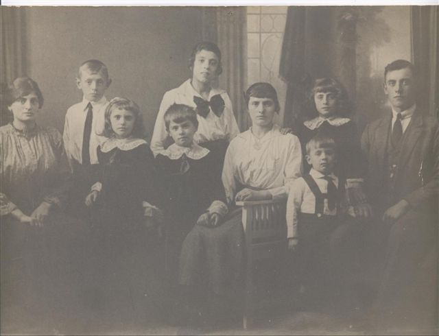
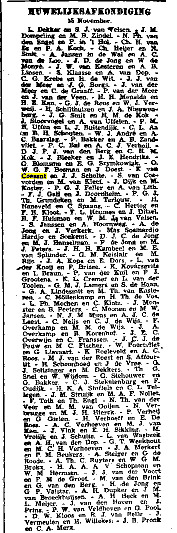

==================================================
Man: Raije Franciscus VAN COESANT
==================================================
Gedoopt: 21 Juni 1778 - plaats: Amsterdam
Overlijden: 3 Oktober 1850 - plaats: Amsterdam
Vader: Raije VAN COESANT (1748-)
Moeder: Geertruij RUCARDO (1750-)
==================================================
Huwelijk: 7 November 1802 - plaats: Amsterdam
==================================================
Vrouw: Geertruij HORST
==================================================
Gedoopt: 26 Juni 1776 - plaats: Amsterdam
Overlijden: 11 September 1850 - plaats: Amsterdam
Geloof: N.H.
Vader: Cornelis HORST (1749-1804)
Moeder: Dirkje VAN DER HEIJDEN (1753-1818)
==================================================
Kinderen...
==================================================
1. F Kind: Geertruij VAN COESANT
Gedoopt: 28 Augustus 1803 - plaats: Amsterdam
Overlijden: 22 Januari 1805
==================================================
2. F Kind: Dirkje VAN COESAND
Gedoopt: 30 Juni 1805 - plaats: Amsterdam
Overlijden: 2 November 1859 - plaats: Amsterdam
Echtgenoot: Antonie Johannes Henricus HOEFACKER
Huwelijk: 8 Juni 1842 - plaats: Amsterdam
Echtgenoot: Johannes Jacobus HORST
Huwelijk: 15 Oktober 1856 - plaats: Amsterdam
==================================================
3. F Kind: Geertruij VAN COESANT
Geboorte: 11 Oktober 1807 - plaats: Amsterdam
Gedoopt: 18 Oktober 1807 - plaats: Amsterdam
Overlijden: 15 Oktober 1809 - plaats: Amsterdam
==================================================
4. M Kind: Raje Fransiskus VAN COESANT
Geboorte: 4 November 1810 - plaats: Amsterdam
Van beroep: kuiper
Echtgenoot: Maria Antonetta BESSELING Huwelijk: 20 Mei 1835 - plaats: Amsterdam
==================================================
5. F Kind: Hendrika Geertruij VAN COESANT
Geboorte: 12 Maart 1815 - plaats: Amsterdam
Overlijden: 10 Maart 1818 - plaats: Amsterdam
==================================================
6. F Kind: Adriana Cornelia VAN COESANT
Geboorte: 19 December 1817 - plaats: Amsterdam
Overlijden: 9 Februari 1821 - plaats: Amsterdam
==================================================
7. M Kind: Hendrik Cornelis VAN COESANT
Geboorte: 13 September 1822 - plaats: Amsterdam
Echtgenoot: Christina Grietje VAN GELDER
Huwelijk: 16 Maart 1848 - plaats: Amsterdam
Gerelateerd aan de familie Horst
Deze informatie heb ik vandaag 12-04-2002 0ntvangen van: Wim L.M. Paternotte.
Dank je wel!!!!
=========================================================================
Hello This is Richard Donselaar Mijn Oom Daniel
Donselaar woonachtig in Den Haag was getrouwd met
M.P.Coesant zijn gegevens zijn, hij had een dochter
Annie Daniel was overleden in 1935
Deze informatie heb ik vandaag 13-04-2002 0ntvangen van: Richard Donselaar. Dank
je wel!!!!
==================================================================================================
De mededeling van Richard Donselaar slaat niet op mijn tante Mietje Petronella,
maar op een zus van mijn opa die ook Mietje Petronella heette. Zij werd geboren
in Den Haag op 13-04-1887 en trouwde Daniel Donselaar.
Ferry van het café zou een zoon van de 2e broer van mijn vader kunnen zijn maar
tevens van een broer van mijn opa: Ferdinand van Coesant.
Dit en nog veel meer informatie heb ik vandaag 01-05-2002 ontvangen van: Hermine
Dekkers. Dank je wel!!!!!!
===================================================================================================
Beste Nanny,
Ik zit hier bij je nicht Ria, dochter van tante Bep, te genieten van je pagina.
Heel erg leuk en wij hebben natuurlijk informatie.
Bij Lamberta van Coesant en Hendrika Louise van Coesant kan het een en ander nog
vermeld worden:( die info heb ik op de familie pag. erbij gezet)
Groeten van tante Riekie, nicht Ria en achternicht Lisette, tot mails.
Dit berichtje heb ik vandaag 09-06-2002 ontvangen van mijn tante Riekie. Leuk en
bedankt !!!!!
===================================================================================================
Beste Nanny,
Terwijl ik zat te kijken of mijn familienaam op internet te vinden was,kwam ik
de naam van Coesant tegen.
De naam van mijn man.
Ferdinand van Coesant geb: 08-10-1955
Zoon van Ferdinand van Coesant geb: 16-11-1916 te Den Haag.
Als je nog meer info wilt hebben kan ik je deze geven.
Wie weet tot horens,
Vriendelijke groet,
Claudia van Coesant-Lakwijk (Ik heb inmiddels een e-mail teruggestuurd en hoop
snel wat van je te horen Claudia)
Dit berichtje heb ik vandaag 13-06-2002 ontvangen. Dank je wel en ik ben
benieuwd naar de rest!!!!
==================================================================================================
Vandaag 16-06-2002 heb ik weer informatie gekregen van Hermine Dekkers.
"Geweldig Hermine" en bedankt!!!!!
==================================================================================================
Vandaag 13-07-2002 heb ik weer informatie gekregen van mijn nicht Ria
Schleärmann, bedankt Ria
Trouwdatum Bep van Coesant en Fred Schlärmann 27 februari 1935.
Trouwdatum Riekie van Coesant en Cel Wildenberg 03 september 1947.
Tante Miep en tante Riekie zijn nog in leven.
Ferdinand (roepnaam Freek) van Coesant geboren op 29 juli 1917 overleden oktober
1959.
Gehuwd met Carla Blokpoel datum onbekend.
Kinderen uit dit huwelijk: Ferry van Coesant en Yvonne van Coesant.
Op de foto:
Boven van links naar rechts:
Rinus de Fouw, Molly ?, Kas van Coesant, Freek van Coesant, Fred Schlärmann,
Arie van Loon.
Onder van links naar rechts:
Miep van Coesant, Opa van Coesant, Riekie van Coesant, Oma van Coesant, Bep van
Coesant, Annie van Coesant, Rietje van Coesant, op schoot Ria Schlärmann.
Nanny mocht je nog vragen hebben dan hoor ik het wel, groetjes Ria.
===================================================================================================
Hallo Nanny vanCoesant. Ik ben geen familie van jou. Maar in mijn familie zit 1
van Coesant.
Dat is Rob van coesant gehuwd met Elisabeth Deelstra, ze hebben 4 kinderen, die
heten Romano, Charissa, Richie en Jamiro. Ze wonen in Noordholland.
Dat wilde ik je even laten weten. Ik ben een tante van hun. Met vriendelijke
groeten Jenny Deelstra.
Dit berichtje heb ik vandaag 18-07-2002 ontvangen, heel erg bedankt daarvoor.
Ik heb haar nog een mailtje gestuurd met de vraag of zij bij Rob wat meer info
over zijn tak kan vragen. Ik hoop nog iets van je te horen Jenny!!!
===================================================================================================
Burgelijke stand - huwelijk (bruid)
Gemeente Oldenzaal - 21-03-1912
Hendrik Jan Feks te Amsterdam leeftijd 31 jaar - Trouwde met Claudina Maria
Charlotta van Coesant te Amsterdam leeftijd 29 jaar.
Ouders van de bruidegom: Hendrik Jan Feks & Sara van der Stam.
Ouder van de bruid: Jacob van Coesant & Jannetje Cornelia Verbrugge
Dit bericht heb ik vandaag 15-08-2002 ontvangen van Aad de Fouw , bedankt
daarvoor.
Dit bericht stond in GenLias, misschien is er iemand die zichzelf of een
familielid hierin herkent, dan hoor ik dat graag!!!
==================================================================================================
Genealogie van Jacob van Coesant
Jacob van Coesant. (van Amstelveen)
(1) Hij had een relatie met Gerritje van den Anker, overleden maandag 27 juni
1785 in Amsterdam (begraven in Amsterdam op het Karthuizer kerkhof).
(2) Hij trouwde donderdag 20 april 1786 in Amsterdam met Marretje Market,
geboren 1756 in Westbroek.
Zij woont onder Amstelveen
Kinderen van Jacob van Coesant en Gerritje van den Anker:
1 Jan van Coesant, gedoopt vrijdag 9 maart 1781, overleden zondag 22 augustus
1819 in Amsterdam.
Kinderen van Jacob van Coesant en Marretje Market:
2 Klaas van Coesant, geboren vrijdag 29 juli 1796 in Amsterdam en overleden
maandag 19 januari 1829 in Amsterdam, 32 jaar oud. Is niet gehuwd. Van beroep
schuitemaker
1 Jan van Coesant, gedoopt vrijdag 9 maart 1781, overleden zondag 22 augustus
1819 in Amsterdam.
Jan van Coesant 09-03-1781 trouwde te Amstelveen op 18-02-1810 met Antje
Ruijsendaal (Ruizendaal) geboren Bunschoten 30-03-1786, zij overleed te
Amsterdam op 12-06-1851.
Jan was melkverkoper, na zijn overlijden heeft Antje de kost verdiend als
“melkslijtster”.Kinderen van Jan van Coesant en Antje Ruijsendaal:
1.1 Gerrit van Coesant, geboren vrijdag 9 februari 1816 in Amsterdam en
overleden maandag 18 november 1867 in Amsterdam, 51 jaar oud.
1.1 Gerrit van Coesant, geboren vrijdag 9 februari 1816 in Amsterdam en
overleden maandag 18 november 1867 in Amsterdam, 51 jaar oud. Hij trouwde
woensdag 8 mei 1839 in Amsterdam met Claudina Maria Charlotta Bonne, geboren
donderdag 23 oktober 1817 in Amsterdam en overleden zaterdag 13 maart 1909 in
Amsterdam, 91 jaar oud, dochter van Bertram Bonne en Marietje Joosten.
Kinderen van Gerrit van Coesant en Claudina Bonne:
1.1.1 Gerrit van Coesant, geboren 1846 in Amsterdam en overleden 1846 in
Amsterdam, 0 jaar oud.
1.1.2 Jacob van Coesant, geboren Hemelvaartsdag donderdag 20 mei 1852 in
Amsterdam en overleden zondag 8 maart 1925 in Amsterdam, 72 jaar oud (begraven
donderdag 12 maart 1925 in Amsterdam op de Nieuwe Oosterbegraafplaats).
1.1.2 Jacob van Coesant, geboren Hemelvaartsdag donderdag 20 mei 1852 in
Amsterdam en overleden zondag 8 maart 1925 in Amsterdam, 72 jaar oud (begraven
donderdag 12 maart 1925 in Amsterdam op de Nieuwe Oosterbegraafplaats). Hij
trouwde maandag 27 november 1876 in Amsterdam met Jannete Cornelia Verbrugge,
geboren 1852 in Amsterdam en overleden dinsdag 15 december 1936 in Amsterdam, 84
jaar oud (begraven vrijdag 18 december 1936 in Amsterdam op de Nieuwe
Oosterbegraafplaats), dochter van Alida van Buuren en Hermanus Verbrugge.
Kinderen van Jacob van Coesant en Jannete Verbrugge:
1.1.2.1 Jacop van Coesant, geboren zaterdag 2 juni 1877 in Amsterdam en
overleden dinsdag 30 juli 1889 in Amsterdam, 12 jaar oud.
1.1.2.2 Hermanus van Coesant, geboren zaterdag 14 december 1878 in Amsterdam en
overleden zondag 29 februari 1880 in Amsterdam, 1 jaar oud.
1.1.2.3 Matje Johanna van Coesant, geboren 05-10-1880 te Amsterdam en overleden
donderdag 5 januari 1967 in Amsterdam, 86 jaar oud.
Zij trouwde 04-08-1904 met Johannes Antonius Majoor, geboren Laren (NH)
14-01-1877 (RK) spoorbeambte (1904) en wisselwachter (1917) te Amsterdam,
overleden voor mei 1947.
1.1.2.4 Claudina Maria Charlotta van Coesant, geboren zaterdag 9 december 1882
in Amsterdam en overleden dinsdag 16 maart 1920 in Hengelo, 37 jaar oud. Zij
trouwde 21-03-1912 te Oldenzaal met Hendrik Jan Feks, leeftijd 31 jaar. In dit
huwelijk is 1 zoon geboren “Henderik Jan”1.1.2.5 Clasina Cornelia (Nannie) van
Coesant, geboren 20-02-1885 te Amsterdam, en overleden zondag 9 juni 1968 in
Amsterdam, 83 jaar oud (begraven donderdag 13 juni 1968 in Amsterdam op de
Nieuwe Oosterbegraafplaats). Zij trouwde te Amsterdam op 23-05-1907 met Pieter
Johannes Berghuis,
geb Den Helder 23-07-1883, smid te Amsterdam (1907).
1.1.2.6 Hermanus van Coesant, geboren woensdag 14 maart 1888 in Amsterdam en
overleden Paasmaandag 2 april 1888 in Amsterdam, 0 jaar oud.
1.1.2.7. Jacoba van Coesant geboren te Amsterdam 26-06-1890
en trouwde te Amsterdam met Geert Takes Bijlsma, geb. Amsterdam 16-02-1888, en
overleden vrijdag 3 mei 1974 in Amsterdam, 83 jaar
kruideniersbediende (1911) winkelbediende (1917).
1.1.2.8 Alida van Coesant, geboren donderdag 8 december 1892 in Amsterdam en
overleden vrijdag 3 februari 1893 in Amsterdam, 0 jaar oud.
1.1.2.9 Jacob van Coesant, geboren vrijdag 23 november 1894 in Amsterdam en
overleden zaterdag 9 november 1968 in Amsterdam, 73 jaar oud (begraven maandag
11 november 1968 in Amsterdam op de Nieuwe Oosterbegraafplaats ).
1.1.2.10 Alida van Coesant, geboren zaterdag 2 oktober 1897 in Amsterdam en
overleden vrijdag 29 oktober 1897 in Amsterdam, 0 jaar oud.
1.1.2.9 Jacob van Coesant, geboren vrijdag 23 november 1894 in Amsterdam en
overleden zaterdag 9 november 1968 in Amsterdam, 73 jaar oud (begraven maandag
11 november 1968 in Amsterdam op de Nieuwe Oosterbegraafplaats ). Hij trouwde
woensdag 23 mei 1917 in Amsterdam met Anna Maria (Anna) Brewe, geboren donderdag
26 april 1894.
Jacob en Anna Marie hebben 3 drie kinderen gekregen. Hun zoon Jacob (Jaap) en
daarna zijn er geen mannelijke Coesant(en) meer.
Deze info heb ik vandaag 26-08-2002 ontvangen van J.Sanders. Heel hartelijk
bedankt daarvoor. In de loop der tijd zal er vast een relatie met mijn familie
komen.
================================================================================================================================
Hallo Nanny,
Ik blijf bezig: Hier het antwoord op je vraag: waar komt zij vandaan en waar is
zij overleden???
Jan van Coesant 09-03-1781 trouwde te Amstelveen op 18-02-1810 met Antje
Ruijsendaal (Ruizendaal) geboren Bunschoten 30-03-1786, zij overleed te
Amsterdam op 12-06-1851.
Nog leuk voor jou met al die Kaspers in de familie. Die naam Kasper is via Antje
in de stamboom gekomen, haar vader was namelijk Casper Ruijzendaal (Ruizendaal),
hij was kleermaker.
Bij nader inzien is het zelfs heel simpel.
Kasper van Coesant die jij als eerste voorouder hebt staan,
geboren 1850 is een zoon van Gerrit van Coesant en Claudina Maria Charlotta
Bonne
en dus een oudere broer van Jacob van Coesant die met Verbrugge was getrouwd.
Nu even wat korte opmerkingen:
1.1.2.3 Matje Johanna is volgens mij geboren 05-10-1880 te Amsterdam.
Zij trouwde 04-08-1904 met Johannes Antonius Majoor, geboren Laren (NH)
14-01-1877
(RK) spoorbeambte (1904) en wisselwachter (1917) te Amsterdam, overleden voor
mei 1947.
1.1.2.4 Je schrijft zij had een relatie met Hendrik Jan Feks.
Maar je weet het precies, want dat is de informatie die Aad de Fouw je
toestuurde.
1.1.2.5 Clasina Cornelia is volgens mij geboren 20-02-1885 te Amsterdam,
zij trouwde te Amsterdam op 23-05-1907 met Pieter Johannes Berghuis,
geb Den Helder 23-07-1883, smid te Amsterdam (1907).
1.1.2.7. Jacoba is volgens mij geboren te Amsterdam 26-06-1890
en trouwde te Amsterdam met Geert Takes Bijlsma, geb. Amsterdam 16-02-1888,
kruideniersbediende (1911) winkelbediende (1917).
Is meneer of mevrouw Sanders een afstammeling van Jacob en Anna Maria? Die vraag
heb ik per e-mail verstuurd, ik ben benieuwd!!
Met vriendelijke groet, Hermine Dekkers. Deze aanvulling op de genealogie van
Jacob van Coesant heb ik vandaag 28-08-2002 ontvangen. Groetjes en bedankt
Hermine.
================================================================================================
Nanny
Bedank voor je bericht over Antje Ruysendaal.
Ik dacht je een nieuwtje te vertellen dat Kasper van Goesant een
Betovergrootvader van mij en waarschijnlijk ook van jou is. Volgens de geboorte
akte zijn Claudina Maria Charlotta Bonne en Gerrit van Coesant de Ouders. De
Familie Bonne komt vanuit Belgie en zijn parapu-makers van beroep.
Mijn relatie tot de van Coesant(en) is de volgende;
Jacob van Coesant en Anna Maria |Brewe hadden 3 kinderen, Jacob Frederika (Riek)
en Anna Maria. De jongste Anna Marie (Ank) is getrouw met Frits Sanders.
Welnu ik ben de zoon van Ank en Frits
Voor alle duidelijkheid in mijn tak zijn geen mannelijke "van Coesant(en) meer
in leven slechts 5 vrouwen..
Mijn volgend onderzoeksvraag is nu "waar komt de naam van Coesant nu vandaan?"
Met vriendelijke groet,
Jack Sanders
Volgens mij niet van de Franse hugenoten zoals mij is verteld?
Dit bericht heb ik vandaag 02-09-2002 ontvangen. Bedankt daarvoor!!!! Dit is
gelijk een antwoord op jou vraag Hermine Dekkers!!! Groetjes Nanny
================================================================================================================================
Vandaag 17-09-2002 heb ik van Suze van Coesant een brief ontvangen, hierin staan
verschillende namen en aanwijzingen om op door te borduren.
Zij had op 03-03-1998 schrijven gekregen van Jolanda van Coesant.
Haar vader Casper van Coesant en de rest van haar fam. wonen in Den Haag.
In leven:
Freek 85 jaar Knd Trees en El
Piet 82 jaar Knd Anja
Sjaan 81 jaar
Daan 78 jaar
Piet 76 jaar
Casper 74 jaar Knd Jolanda 42 en Ferry 39
W.H 72 jaar
Annie en Klaar overleden.
Is dit familie van mij?
Ik vermoed dat het kinderen zijn van Ferdinand Monsees & Klara Elisabeth v.
Gemert.
Alleen Piet van 76 jaar kan ik in het rijtje niet thuisbrengen?
Ik ga Jolanda bellen of schrijven om dat te bevestigen.
Dit en een aantal telefoonnummers en adressen van mensen die van Coesant heten
heb ik ook van Suze gekregen, daar ga ik op af om deze site nog voller te
krijgen.
Bedankt voor alles Suze!!!!
====================================================================================================================================
Hoi daar!
Vorige week stuurde je een brief naar Hengevelde, je had van mijn achterneef
Harold ons adres gekregen dus vandaar even een berichtje.
Mijn moeder heeft een lange brief geschreven , zelf is ze niet echt
computertechnisch, maar met een beetje hulp zit ze nu aandachtig te bekijken wat
je zoal hebt uitgezocht.
Ze heeft inderdaad zelf ook wel eens gezocht naar het een en ander via oproepjes
in bladen en dergelijke, maar hierover heeft ze geloof ik wel geschreven in die
brief.
Hier in ieder geval een berichtje dat er zeker wel interesse is van haar kant.
Groetjes namens de familie van Coesant te Hengevelde
(Hier in Twente zijn er dus ook wel een aantal,
kijk voor de gein eens in het telefoonboek van regio Overijssel
en dan vooral in Enter...... zie je der zo een hele bult op een rij!!!)
Zal ik zeker doen Jarno!!!
Deze e-mail kreeg ik vandaag 20-09-2002 van Jarno van Coesant, de zoon van Suze,
Jarno bedankt voor je reactie.
===============================================================================================
Hallo Nannie,
De vraag waar de naam Van Coesant vandaan komt maakte mij nieuwsgierig.
De eerste Van Coesant die ik heb kunnen vinden is Jan Hendricksen van Coesant.
De ondertrouwacte van 15-04-1667 vermeldt: Jan Hendricksen van Coesant jm van
IJzendoorn en Susanna Joosten van Soelen, jd. van Buurmalsen.
Beiden werden begraven te Buurmalsen op het kerkhof; hij in 1721, zij in 1713.
Daarom dacht ik: ik kijk eens of ik onder Buurmalsen of IJzerdoorn wat vind op
Internet.
En ja hoor,er is www.buurmalsen.com
ik stuurde een mailtje met de vraag weet u waar de naam Van Coesant vandaan komt
en inmiddels heb ik antwoord:
De Koezand was een huis in de uiterwaard in IJzendoorn en wordt in 1656 genoemd
in het rechterlijk archief van de NederBetuwe inv.nr. 204 op pag. 38v.
Dat archief ligt volgens mijn informatie nog op het Rijksarchief in Arnhem.
Met dank aan C.A.M. Mauritsz-Waller van MakingThePages b.v. die de beheerder is
van www.buurmalsen.com en dit supersnel voor mij uitzocht.
Nu kan je dus echt je roots op je website kwijt!
Met vriendelijke groet,
Hermine Dekkers
Dit bericht samen met het volgende kreeg ik vandaag 22-09-2002 gestuurd van
Hermine Dekkers, zonder haar was ik nooit zover gekomen. bedankt Hermine.
Hallo Nannie,
Dat was weer interessante informatie.
Ik deel je mening dat het om de kinderen van Ferdinand van Coesant en Klara
Elisabeth van Gemert gaat.
Volgens Suze is Freek (=Ferdinand van Coesant) de vader van Trees en El, maar
volgens het bericht dat je in juni van Claudia kreeg is hij ook de vader van
Ferdinand van Coesant die in 1955 werd geboren.
Piet van 76 is, denk ik, een vrouw en wel Maria Petronella geboren in 1926.
Wie is nu de man van Suze? En wie is de opa van Jarno?
Jarno schrijft dat er in Enter veel van Coesanten wonen.
Die stammen allemaal af van Bernardus Gerardus van Coesant,
geboren in Amsterdam op 18-11-1877 zoon van Jansje Jeannetta van Coesant.
Het is wel familie maar heel in de verte, zoals wij ook heel in de verte verwant
zijn.
De antwoorden op je vragen heb ik inmiddels gemaild: Groetjes Nanny
=========================================================
Hallo Nannie,
Zorg maar dat ik niet naast mijn schoenen ga lopen met al die complimentjes!
Voor mij is het leuk omdat je hier zomaar de afstammelingen vindt, die je anders
lastig kan vinden. Ik maakte al de opmerking dat de familie uit Enter allemaal
afstamt van Bernardus Gerardus van Coesant, geboren in Amsterdam op 18-11-1877
zoon van Jansje Jeannetta van Coesant.
Ik zal wat meer informatie geven, dan kan Suze en familie als ze wil de recente
gegevens toevoegen.
I Pieter van Coesant geboren Amsterdam 03-10-1814. (Ned Herv.) Hij kon niet
schrijven. Hij was buitenvaarder van de Vischmarkt (1834), werkman (1835, 1846)
stratenmaker (1836), zonder beroep (1839, 1841, 1844, 1849), sjouwerman (1843,
1850 – 1856), hij overleed op 4 mei 1866 in het Binnengasthuis in Amsterdam. Hij
huwde te Amsterdam 31-12-1834 met Maria Josina Piechar (Pichar, Pichard) geboren
te Amsterdam 21 maart 1814 (Ned Herv) zij kon niet schrijven, ventster (1834)
overleden te Amsterdam 24-11-1961. Natuurlijke dochter van Maria Piechar,
werkster.
Als in de familie het verhaal gaat dat ze uit Frankrijk komen, dan komt dat denk
ik van deze familie Pichard.
Dit echtpaar had 8 kinderen waarvan Jansje Jeannetta de jongste was. De familie
had het niet rijk. In de archieven van de huiszittenhuizen (we zouden nu zeggen
de sociale dienst) staat vermeld dat het gezin ondersteuning kreeg.
II Jansje Jeannetta van Coesant werd geboren in Amsterdam op 26 maart 1852, zij
kon niet schrijven, zonder beroep (1880, 1887), ventster (1883), overleden
Amsterdam 09-06-1887.
III Bernardus Gerardus van Coesant, geboren in Amsterdam op 18-11-1877 zoon van
Jansje Jeannetta van Coesant. Ik weet niet met wie hij huwde. In ieder geval is
hij overleden voor mei 1947 (het moment van de volkstelling).
Hij was dus bijna 10 toen zijn moeder stierf en zal toen in een weeshuis zijn
geplaatst. Interessant dat de familie zegt dat zijn vrouw ook uit een weeshuis
kwam.
IV Kinderen van Bernardus:
IVa Jan H. van Coesant, geboren 27 juni 1905 ik weet niet waar. Hij woonde te
Enter, Disselweg 8, (1947)
IVb Gerhard van Coesant
IVc Johannes van Coesant geboren 24-11-1910 ik weet niet waar. Hij woonde te
Enter, Disselweg 8, (1947)
IVd Bernardus Gerhardus van Coesant
IVe Gradus van Coesant
IVf Diena J. van Coesant, geb. 27-01-1917 ik weet niet waar. Zij woonde te
Enter, Disselweg 8, (1947)
IVb Gerhard van Coesant (Gerard) geboren Enter (gem. Wierden) 25-04-1907, exped.
Veetransp. Overl/begr. Lourdes (ziekenhuis)/Enter (r.k. begraafplaats)
24/29-08-1964 (bidprentje in de collectie van C.B.G.) hij was gehuwd met A.H.
Antonissen (Toos). Zij woonden te Enter (gem. Wierden) Dorpsstraat 147 (1947)
Kinderen:
1. Bernardus Gerhardus van Coesant geb. 29-07-1944 ik weet niet waar.
2. Antonia Maria van Coesant geb. 25-08-1945 ik weet niet waar
3. Geertruida Maria van Coesant geb 12-05-1947 ik weet niet waar
en kennelijk nog 11 kinderen waar ik geen gegevens van heb, ik hou mij
aanbevolen!
Deze familie is vermoedelijk katholiek, is dat vanwege Toos of is de rest van de
familie in Enter ook katholiek?
IVd Bernardus Gerhardus van Coesant (Berend) geboren 10-10-1912 ik weet niet
waar trouwde Dika Freriksen (?). Zij woonden te Enter (gem Wierden) Dorpsstraat
135a (1947)
Zij kregen 12 kinderen waarvan ik informatie heb van 5:
1. Bernardus Gerhardus van Coesant geb. 06-06-1942 ik weet niet waar
2. Geertruida Joz. Mar. Van Coesant, geb 07-11-1943 (tweeling met 3)
3. Geertruida Mar. Joh. Van Coesant, geb 07-11-1943 (tweeling met 2)
4. Gerhardus van Coesant geb. 25-08-1945
5. Hendrik Johannes van Coesant geb. 03-01-1947.
IVe Gradus (Graads) van Coesant geboren 22-11-1914 ik weet niet waar. Hij woonde
te Enter, Disselweg 8, (1947). gehuwd met trui kregen 2 kinderen
2 zijn er vrijgezel gebleven, zijn dat Jan H. en Johannes?
Ik ben reuze benieuwd naar alle ontbrekende actuele informatie. Met deze grote
gezinnen verwondert het me niet dat er zoveel van Coesanten in deze buurt wonen.
Nog steeds is er een taxibedrijf Van Coesant op de Disselsweg 16a, 7468 AM
Enter, tel 0547-381394
Met vriendelijke groet, Hermine Dekkers
Ik kan het toch niet laten hoor Hermine, je bent een kanjer!!!!!!Deze info kreeg
ik vandaag 22-09-2002 van Hermine Dekkers, bedankt!!!
==============================================================================================
Het is alweer een tijdje geleden dat ik nieuwe info had, maar je ziet , het komt
vanzelf............een berichtje van mijn neef.
Hallo Nanny,
Lang niets van je gezien of gehoord maar dankzij het internet weer contact. Leuk
te lezen wat je allemaal hebt kunnen achterhalen betreffende je achternaam: van
Coesant.
Om de familiegeschiedenis aan te vullen het volgende"
Mijn moeder Anna Hendrika is op 30 augustus 1979 in Den Haag overleden, dus op
63-jarige leeftijd! (op mijn verjaardag...)!!
Mijn vader Johannes Cornelis Adrianus van Loon is overleden op Valentijnsdag 14
februari 1988 overleden, oud 82 jaar.
Zoals je wellicht weet heb ik de familienaam ooit laten onderzoeken te Amsterdam
bij de Vrije Universiteit.
De familienaam is mogelijk afkomstig uit Zeeland en wel van het verdronken
eiland Koezand wat in de Westerschelde bij een watersnood is verdronken in het
jaar 1319 of daaromtrent, nabij de Wulpen.
Op oude provinciale kaarten moet het eiland te vinden zijn. Ik bezit die niet,
helaas.
Ik ben gehuwd met Corine Buijs op 17 december 1975 in Den Haag.
Geen kinderen, wel 2 lieve katjes.
Mogelijk wil je nog het een en ander weten. Bel of mail me gerust.
O ja, oom Corstiaan Wiemans uit Son en Breughel is overleden, wanneer weet ik
niet precies.
Ook oom Rinus de Fouw is overleden. Tante Miep moet nog leven zover
bekend....woont vermoedelijk in een verzorgingstehuis bij de Moerweg.
Mijn broer Constant(ijn) woont ook in Den Haag
Met vriendelijke groet, Eduard (van Loon
Dit bericht kreeg ik vandaag 20 December van mijn neef Eduard van Loon, die had
ik jaren niet gezien, leuk hé. Bedankt Eduard.
===============================================================================================
http://home-3.tiscali.nl/~mwdapu90/stamboom/Pak00748.htm
Hallo Nannie,
Hier vond ik nog een van Coezant. Maria Antonette is een dochter van Raje
Franciscus en Maria Antonetta
Besseling die je bij je info hebt staan.
Met vriendelijke groet,
Hermine Dekkers
Deze aanwijzing kreeg ik vandaag 23 December 2002 van Hermine Dekkers. Bedankt
Hermine!!!!!
=======================================================================
Berend van Coesant en Dika van Coesant Freriksen
Oudste zoon van hen:
Bennie Bernardus Gerhardus van Coesant geb. 06-06-1942 Gehuwd met Joke Maria van
Coesant Pots geb. te Enter 29-01-1948
Kinderen:
1e kind Anita van Coesant geb.te Wierden 10-3-1970 Kinderen van Anita, Joey
Sjors Hinnen Geb. te Almelo 14-05-1998, Nikki Joan Hinnen Geb. te Zwolle
12-10-1999 Nu wonend te Enter
2e kind Ingrid Koster van Coesant Geb. 14-07-1971. Gehuwd met Patrick Koster
27-06-1972 te Enschede Geb. tweeling Anne en Tess Koster 31-07-1999
3-Danielle gegevens volgen.
4-Ben gegevens volgen
Deze gegevens heb ik vandaag 04-01-2003 toegestuurd gekregen van Suze van
Coesant, deze gegevens sluiten aan bij wat ik 22-09-2002 van Hermine Dekkers
gestuurd heb gekregen. Bedankt Suze
===============================================================================================
Gegevens uit Enter:
Toegestuurd gekregen van Suze van Coesant en haar man Johan van Coesant.
De ouders van Johan: Bernardus Gerhardus van Coesant (Berend) van Coesant en
Dika Freriksen
1. Bennie Bernardus Gerhardus geb.te Enter 06-06-1942
2. Geertruida Joz. Mar. Van Coesant, geb te Enter 07-11-1943 (tweeling met 3)
3. Geertruida Mar. Joh. Van Coesant, geb te Enter 07-11-1943 (tweeling met 2)
4. Gerhardus van Coesant geb. 25-08-1945
5. Hendrik Johannes van Coesant geb. 03-01-1947
6. Johan van Coesant geb.te Enter 25-05-1948
7. Ria Hendrika Josefina Maria van Coesant, geb.te Almelo gemeente Wierden
29-11-1949 Tweelingzusje overleden.
8. Annie van Coesant geb.te Enter 10-03-1951
9. Marietje M J van Coesant,geb.te Enter 05-05-1952
10. Nardie Bernardo Maria van Coesant, geb. te Enter 19-11-1955
11. Tonnie Antonius Gerhardus van Coesant, geb te Enter 15-04-1957
1a. Bennie Bernardus Gerhardus, gehuwd met Joke Maria Pots geb. te Enter
29-01-48.Kinderen:
Anita van Coesant, geb.te Wierden 10-03-1970 nu wonend te Enter
Ingrid van Coesant, geb.14-07-1971 gehuwd met Patrick Koster geb. te Enschede
27-06-1972.
Danielle van Coesant, geb.te Enter 07-04-1975, gehuwd 18-10-2002 met Erik
Morsink te Enter, Ben Bernardus Jan van Coesant, geb te Enter 05-04-1976, gehuwd
met Miranda Danielle Broekmate, geb.te Nijverdal gemeente Hellendoorn
27-06-1972, geb. zoon Darzen Rick van Coesant 11-10-2002
2a. Geertruida Joz. Mar. Van Coesant, gehuwd met Herman Kolenbrander geb.
17-09-1940 is overleden. Kinderen:
Henriette Kolenbrander 24-05-1965 geb, en overleden te Zenden
Jan Kolenbrander 07-08-1968 geb.te Zenden, Ben Kolenbrander 17-10-1970 geb.te
Zenden, Henriette Kolenbrander 14-05-1976 geb.te Zenden
3a. Truus Geertruida Mar. Joh. Van Coesant, gehuwd met Gerrit
Exsterkate(overleden) Ze kregen 1 dochter, Denise Exsterkate
Truus is hertrouwd met een neef van Gerrit, Jan Exsterkate wonend te Stad
Delder, De hof v. Twente. Truus van Coesant is voorjaar 2001 overleden.
4a. Gert Gerhardus van Coesant, huwde met een weduwe Trees Oude Nijhuis,geb.1950
Trees had 2 kinderen, Fabian en Fincent Oude Nijhuis
Gert en Trees kregen een zoon, Ramon Hendrikus Bernardus van Coesant geb.te
Enter 13-05-1987
5a. Hendrik Johannes van Coesant geb. te Enter 03-01-1947, hendrik is vrijgezel
gebleven.
6a. Johan van Coesant geb.te Enter 25-05-1948, gehuwd met Suze ten Brummelhuis
geb.te Hengelo, ouderlijk huis Meenhuisweg 4 Ambt Delden nu Hof v. Twente.
Kinderen:
Carmen van Coesant 07-07-1978, Haike van Coesant 25-04-1980, Jarno van Coesant
10-09-1981
Johan is vrachtwagenchauffeur, zijn vader had vroeger samen met zijn oom een Vee
Transport bedrijf, zijn oom is verder gegaan met het transportbedrijf en Berend
is de veehandel in gegaan, Gerrit de zoon van Berend is nog veehandelaar.
7a. Ria Hendrika Josefina Maria van Coesant, Ria is gehuwd met Herman Slot,
woont te Wierden en hebben 3 kinderen. Chantal, Sabine en Ivonne.
8a. Annie van Coesant, gehuwd met Hennie Konink, geb. 28-09-1949, kinderen:
Ester 28-07-1973, Nico 27-09-1975, Herben 28-11-1976, Annie is in september 2001
overleden.
9a. Marietje M J van Coesant, gehuwd met Johan Wippert, Kinderen Wendy
11-04-1975, Dewie 08-04-1977
10a. Nardie Bernardo Maria van Coesant,gehuwd met Herman Tilker, kinderen Nancy
21-09-83, Petra 17-11-1987 en Ceciel Tilker 14-05-1989
11a. Tonnie Antonius Gerhardus van Coesant, gehuwd met gerrie GJM westerik
20-03-60, zij kregen een dochter, die overleden is, 2e dochter Leonie van
Coesant geb.08-12-1989
==============================================================================
Gerard en Toos van Coesant te Enter
Ze kregen 14 kinderen waarvan ik de meeste datums en namen nog niet heb.
1e kind, Bennie van Coesant, gehuwd met Thea van Coesant Meuleman, Zij kregen 2
kinderen,
Annet van Coesant, geb. te Enter 04-10-1970, gehuwd met Marcel List, zij kregen
1 dochter, Kyara List geb. 14-02-1998,
Renee van Coesant, geb.te Enter 21-09-1972, gehuwd met Nasmiya van Coesant
Scheepshof. Zij kregen 2 kinderen, Jordy van Coesant, geb. te Enter 13-06-1996,
Larissa van Coesant, geb.te Hengelo 21-02-1998
Nasmiya heeft een paar jaar geleden haar zoontje gered van verdrinking in 't
zwembad in Goor, het gebeurde tijdens de zwemles, een oplettende moeder zei
"Nasmiya waar is Jordy" zij keek, Jordy lag te spartelen op de bodem, ze bedacht
zich geen moment, sprong in het water en redde haar kind.
Deze brief heb ik vandaag 09-01-2003 van Suze van Coesant ontvangen, grandioos
Suze!!!
==============================================================================
Beste Nanny,
Ik ben de stamboom van Coesant op het internet tegen gekomen, en wil je nog wat
gegevens oven mijn moeder Mietje Petronella (Rietje) geven. Ik ben de jongste
zoon Frank. Rietje is overleden op 23 Sept. 1973 en mijn vader Corstiaan in 1995
(datum volgt nog) Corstiaan en Rietje zijn op 6 Dec. 1944 getrouwd en hadden 2
kinderen Ronald geb. 21-juli-1947 en Frank geb. 1-maart-1949 Ronald is niet
getrouwd heeft wel een dochter Wietske geb 12-jan-1991. Frank is getrouwd met
Petronella Martina (Els) Meijers geb 9-aug-1950 en hebben 3 kinderen Sander geb
2-sept-1972, Gaby geb.17-mei-1975 en Vivian geb.20-juli-1977 Ik hoop dat je met
deze gegevens de stamboom wat completer kan maken Vriendelijke groeten Frank
Wiemans.
Deze mail heb ik vandaag 09-02-2003 ontvangen van mijn neef Frank, bedankt Frank
==============================================================================
Bedankt voor je antwoord.
Bij de familie foto staat dat deze ongeveer genomen is in 1935 maar volgens
mij is de foto genomen toen opa en oma van Coesant 30 jaar getrouwd waren,
mijn nicht Ria (geb 11-06-1938) die op schoot bij haar moeder zit is dan
ongeveer een jaar,de familie was toen nog kompleet wan mijn oom Freek stond
op het punt naar Indonesie te gaan.
Groetjes Frank.
Deze mail heb ik vandaag 12-02-2003 ontvangen van mijn neef Frank, bedankt Frank
==============================================================================
Vrijdag 28 februari ben ik bij mijn neef Ruud de Fouw geweest, ik had hem toch
zeker zo'n 30 jaar niet gezien. Dus nu hadden we heel wat bij te kletsen. Hij
had van zijn overleden vader het een en ander bewaard, waaronder de
doopherinnering van mijn vader, die heb ik bij de foto's heb gezet. Heel
interessant vond ik ook dat hij veel documentjes van mijn oma en opa had. Daar
heb ik nu een aparte link van gemaakt voor de liefhebber.
Groetjes en ik ben er erg blij mee Nanny
==============================================================================
Hallo Nanny
Ik zag je site op het internet, niet zomaar natuurlijk.
Ik ben n.l. getrouwd met een van Coesant.
Een tante van mij heeft al melding van ons gemaakt, Jenny.
Ik heet zelf Liesbeth Deelstra en ben getrouwd met Rob van Coesant en wij hebben
4 kinderen.
Mijn schoonouders heten Jacobus Johannes van Coesant & Wilhemina Christina
Cornelia van Nol
Mijn schoonmoeder had al 3 kinderen toen Ko met haar trouwde,dus biologisch
gezien heeft mijn schoonvader geen kinderen.
Gevoelsmatig is het natuurlijk wel zo, want mijn man was ong. 2 jaar toen hij,
Ko,bij hun kwam wonen. Mijn schoonvader Ko heeft nog 2 broers, Kasper en Rob.
Hun moeder woonde op het mercatorplein in Amsterdam.
Geboortedata enz zal ik even na moeten vragen.
Als ik wat meer weet dan hoor je het nog wel.
Groetjes Liesbeth van Coesant
Dit bericht kreeg ik vandaag 10-03-2003 van Liesbeth, reuze bedankt
daarvoor!!!!!
==============================================================================
Hallo Nanny,
Hier nog wat namen en geboorte data:
Mijn schoonvader heet: Jakobus Johannes van Coesant (roepnaam Ko), 08-05-1931,
is getrouwd met Wilhelmina Catharina Cornelia van Nol (roepnaam Willy).
Biologisch gezien heeft mijn schoonvader geen kinderen, maar heeft wel de
volgende 2 geadopteerd en dragen nu dus ook de naam van Coesant. (zijn de
kinderen die Willy al had)
Jelle van Coesant geb. in 1955, getrouwd met Anita Blom 26 jaar geleden en ze
hebben 4 kinderen.
Esther & Nathalie (een tweeling waarvan Nathalie op jonge leeftijd is
gestorven), Joshua en Sanne.
Robert van Coesant (roepnaam Rob), getrouwd met mij, Liesbeth Deelstra, in 1985.
Wij hebben dus ook 4 kinderen: Romano, Charissa, Richie & Jamiro.
De vader van mijn schoonvader heet ook Jakobus Johannes van Coesant 19-01-1909-
1967 en was getrouwd (in ca. 1928) met Augusta Nolting,21-06-1911- 1992.
Mijn schoonvader heeft 2 broers te weten Kasper en Robert.
Kasper is van 17-06-1929 en heeft 2 kinderen: Kasper (op jonge leeftijd
gestorven aan leukemie) en André. Het is goed mogelijk dat dit de 'Amerikaanse'
André is waar jij ook een foto van hebt op je site, de entertainer!
Robert, de andere broer, is van 11-03-1942 en heeft geen kinderen.
De vader van mijn schoonvader had 2 broers en een zus: Koen, Katrien en ja hoor
weer een Kasper!
Koen heeft 2 kinderen: Tonnie en Corrie, Kasper had een groentenwinkel in de van
Beuningenstraat in Amsterdam.
De familie is opgegroeid in de Jordaan, mijn schoonvader woonde met z'n familie
in de Rozenstraat.
Ik hoop dat je er uit kan komen met al die namen.
Groetjes van Liesbeth van Coesant
Bedankt weer Liesbeth voor dit bericht wat ik vandaag 11-03-2003 van je kreeg.
=====================================================================
Hallo Nannie,
Een tijdje niet op je site geweest en nu lees ik de interessante informatie van
Liesbeth van Coesant. Dat is inderdaad familie van je.
Op je site heb je bij je genealogie staan: Gerrit van Coesant getrouwd met
Claudia Maria Charlotte Bonne. Ik heb je destijds de kinderen doorgegeven die
interessant waren voor jouw stamboom, maar hun oudste zoon was:
Jan van Coesant (heette naar z’n opa van vaders kant zoals dat toen gebruikelijk
was) geb. Amsterdam 16-05-1840. Hij was passementwerker, stucadoor, opperman,
steenhouwer en overleed in Amsterdam 16-01-1928.
Hij trouwde in Amsterdam 17-04-1861 met
Josepfina Sophia Abrahams, geb Amsterdam 02-05-1841, overleden Amsterdam
23-02-1905.
Zij hadden voor zover ik weet 15 kinderen waaronder:
Casper van Coesant, geb. Amsterdam 27-02-1875 schijvenschuurder en werkman. Hij
overleed na mei 1947, misschien kan Liesbeth vertellen wanneer.
Hij huwde te Amsterdam 19-12-1900 Catharina Clasina Meijer geb. Amsterdam
17-05-1876, overleden 20-01-1924.
Zij hadden 6 kinderen:
Coenraad Antonius van Coesant (de Koen die Liesbeth noemde)
Catharina Clasina van Coesant (de Katrien die Liesbeth noemde)
Casper van Coesant geb. Amsterdam 20-06-1903 en overleden Amsterdam 14-09-1905
Casper van Coesant geb. Amsterdam 08-01-1907 en overleden Amsterdam 02-05-1910
Jacobus Johannes van Coesant (de vader van Liesbeth’s schoonvader)
Casper van Coesant (de Kasper die Liesbeth noemde)
Coenraad Antonius van Coesant
Geb. Amsterdam 22-07-1899 controlebeambte in een vliegtuigfabriek, trouwde
Amsterdam 06-12-1923 Cornelia Theodora Ramak, geb. Amsterdam 09-07-1901.
Kinderen Antonius Coenraad (Tonnie) en Cornelia Theodora (Corrie) van Coesant.
Jacobus Johannes van Coesant
Geb. Amsterdam 19-01-1909, rijwielhersteller, gestorven in 1967 (welke datum?)
trouwde Amsterdam 06-02-1929 Augusta Johanna Nolting, geb. Amsterdam 14-06-1912
(ik heb hier een andere datum dan Liesbeth 14 i.p.v. 21 juni en 1912 i.p.v.
1911, wat is juist?), overleden 1992 (welke datum?)
Kinderen:
Casper van Coesant geb. Amsterdam 17-07-1929 (ik heb een andere datum dan
Liesbeth juli i.p.v. juni, wat is goed?). Met wie is hij getrouwd? Wanneer zijn
zijn kinderen geboren Kasper en André?
Jacobus Johannes van Coesant, geb. Amsterdam 08-05-1931 gehuwd met Wilhelmina
Catharina Cornelia van Nol, Kinderen: Jelle en Robert van Coesant (geboorte data
en plaatsen?)
Rob van Coesant geb. waar? 11-03-1941 (ik heb een ander jaar dan Liesbeth 1942)
Je kunt je genealogie dus aanvullen. Als je toch bezig bent Je hebt staan
Ander kind (niet uit bovenstaande relatie):
1.1 M Gerrit van Coesant, geboren op vrijdag 9 februari 1816 in Amsterdam. is
overleden op maandag 18 november 1867 in Amsterdam, 51 jaar oud.
Er moet staan zij hadden 5 kinderen waaronder Gerrit…
Ik hoop dat Liesbeth jou nog heel wat info over deze tak stuurt. Veel succes
verder!
Met vriendelijke groet, Hermine DekkersDeze mail kreeg ik vandaag 30 April van
Hermine Dekkers , bedankt Hermine, Ik ga het bijwerken op mijn site.
==================================================================
Amsterdam 17 oktober 2003
Nanny,
Met veel plezier heb ik gisteren het ''Coesantendeel'' van mijn familiestamboom
bekeken. Aan de muur van mijn kamer hangt nog een familieportret van mijn
grootouders. Geert Takes Bijlsma en Jacoba van Coesant. Mijn grootouders zijn
zoals je weet oud geworden (84 en 86 jaar). Als kind bezocht ik hen iedere
vrijdag. Zij hadden geen tv en de avonden werden vaak gevuld met herinneringen
aan vervlogen dagen. Janette Cornelia Verbrugge bijvoorbeeld (weduwe van Jacob
van Coeant 1.1.4 ) woonde na het overlijden van haar man Jacob van Coesant in
bij mijn grootouders. De familie woonde in de Van Ostadestraat in
Amsterdam Jacob van Coesant werkte in een fabriek in Amsterdam. Jacob was zeer
gelovig (Nederlands Hervormd). Hij stond bekend als de eerlijke Jacob. Aan de
fabriekspoorten werd hij dan ook niet gecontroleerd op het wegnemen van
goederen. Janette Cornelia was een sterke persoonlijkheid
Mijn grootvader Geert Bijlsma werd geboren in de Dirk van Hasseltsteeg en mijn
grootmoeder Jacoba (Co) is afkomstig van Kattenburg. Geert en Jacoba kregen twee
kinderen: Jan Bijlsma (mijn vader) en Janetta Cornelia (Nenne) Bijlsma. Beide
zijn overleden.Geert en Co hadden een goed huwelijk. Zij overleefden de Spaanse
Griep van 1918 en alhoewel mijn grootmoeder kwakkelde met haar gezondheid
beleefden zij in de zeventiger jaren hun 65-jarige huwelijksfeest. Het leven van
mijn grootouders was geregeld. Zondag naar de Oranjekerk in de van Ostadestraat
en maandag wasdag, waarop er altijd pap gegeten werd. Iedere dag kende een vast
patroon. Geert Takes was de beste van de lagere school, ontving daarvoor een
horloge van de stad Amsterdam, maar mocht niet doorleren. Hij kwam te werken in
het Kruidenhuis Bijlsma op de Nieuwmarkt in Amsterdam. Na een ruzie met zijn
broer kwam hij in 1917 in dienst bij Jacob Hooi (bestaat nog steeds). In de
twintig jaren solliciteerde hij bij de gemeente Waterleiding. Jarenlang is hij
daar portier geweest. Mijn grootmoeder Jacoba werd op latere leeftijd dement,
maar de familie-verhalen uit haar jeugd bleven paraat.
Het bekijken van de opsomming van namen maakte bij mij veel herinneringen los.
Neem nou bijvoorbeeld Clasina Cornelia van Coesant. Dit is mijn (oud) tante
Nannie. Jouw naamgenote Nannie ( de zuster van mijn grootmoeder), woonde in een
benedenhuis in de van der Helstraat in Amsterdam. Zij was getrouwd met oom Piet
Berghuis. Tante Nannie stond bekend als een lieve vrouw.
In het begin van haar huwelijk verloor ze een kind.Ik meen op dat het meisje
acht jaar is geworden en Ankie of Annie heette. Nannie is daar nooit goed
overheen gekomen.
Tante Matje (1.1.4.3) was een kleine vrouw met een rond brilletje op. Op
verjaardagen bij mijn grootouders zat zij altijd op een laag stoeltje. Ik het
stoeltje nog steeds in mijn bezit. Tante Dien heb ik vanzelfsprekend niet
gekend, volgens mijn grootmoeder was zij een knappe verschijning Zij trouwde met
Hendrik Feks. In de familie stond Feks bekend als arrogant. Droeg een strooien
hoedje en was voorzien van een rotting. Tante Dien is jong overleden. Er was in
de twintiger jaren weinig contact met Dien en Feks en na het overlijden van Dien
is Feks uit het beeld verdwenen. In de opsomming vind ik ook Jacob van Coesant
(1.1.4.9). Zijn roepnaam was Jaap. Jaap en zijn zuster Jacoba (Co) van Coesant
konden het goed met elkaar vinden. Zijn vrouw tante Anna (Brewe) gingen zondag's
bij elkaar op bezoek en soms uitwandelen. Oom Jaap is overleden aan leverkanker.
De familie van Coesant woonde in de van der Helstockadestraat De zoon van Jacob
van Coesant heette Jaap en was een volle neef van mijn vader Jan Bijlsma. De
vrouw van Jaap heet van haar meisjesnaam (Jo) Philips en woont volgens mij nog
steeds in Buitenveldert.
Vanzelfsprekend zijn er veel meer herinneringen te noteren. In mijn familie
spreekt men bijvoorbeeld over een typisch Coesanten gezicht.'' Als je die
familietrek ziet, herken je m.
Maar goed we dwalen af. Ik kan niet helemaal traceren van welke
gemeenschappelijke voorouders wij nog hebben. Betbetoma ((La) Bonne of (Le)
Bonne ( De goede of het dienstmeisje??) wellicht. Zij is overigens zeer oud
geworden en ook in mijn tak van de familie circuleert het verhaal van afstamming
van de Hugenoten. Waarschijnlijk door de Franse naam Bonne. Ook het ''eiland''
verhaal is mondeling doorgeven. Ik vind het verrassend om te lezen hoe het
werkelijk zit
Nanny, ik wens je veel succes met de naspeuringen via het net. In mijn jeugd
bezocht ik nog wel eens het Gemeentearchief op de Amsteldijk. Binnenkort komt
het DTB (doop trouw en begrafenisregister) waarschijnlijk online. Hopelijk kun
je blijven speuren met de muis.............
Mocht je vragen hebben, kun je altijd contact zoeken.
Met vriendelijke groet, Hans K. Bijlsma
Te Amsterdam
zoon van
Jan Bijlsma en Johanna Barneveld
(Jan Bijlsma is de zoon van Geert Takes Bijlsma en Jacoba van Coesant)
Deze mail kreeg ik vandaag 21 Oktober van Hans K.Bijlsma, ik heb ervan genoten
om het te lezen. Bedankt Hans ook voor de tip van het DTB, ik hou het in de
gaten!!!!!
====================================================================================================================================
Hendrikus Gerhardus Johannes OTTEN, Woning inrichtingsbedrijf, geboren op
26-11-1947 te Enter, zoon van Gerhardus(Graads) OTTEN en Johanna Egberdina
Francisca SPEKREIJSE Gehuwd op 25-jarige leeftijd op 21-07-1973 te Wierden met
G.M.van COESANT, 26 jaar oud, geboren op 12-05-1947 te Enter. ( de Geertruida
Maria uit het gedeelte van 22-09-2002 van Hermine Dekkers)
Uit dit huwelijk: Nick G.J. Geboren op 27-02-1975 te Wierden. Bart B.J. Geboren
op 29-07-1977 te Wierden.
Dit heb ik vandaag 30 oktober 2003 gevonden op het internet.
===================================================================================================
Hallo Nanny Bastiaan,
hierbij enkele aanvullingen voor je stamboomonderzoek.
1.1.1.1.5.2 M Jacobus Johannes van Coesant (Ko), geboren op vrijdag 8 mei 1931
in Amsterdam.
kreeg een relatie met V Wilhelmina Catharina Cornelia van Nol .
Kinderen van M Jacobus Johannes van Coesant (Ko) en V Wilhelmina Catharina
Cornelia van Nol :
1.1.1.1.5.2.1 M Robert van Coesant, geboren op 10 augustus 1960 in Amsterdam
1.1.1.1.5.2.2 M Jelle van Coesant , geboren op 9 december 1955 in Amsterdam
1.1.1.1.5.2.2 M Jelle van Coesant , geboren 9 december 1955.
trouwde op 27 mei 1977 met V Anita Blom in Amsterdam
Kinderen van M Jelle van Coesant en V Anita Blom :
1.1.1.1.5.2.2.1 V Esther van Coesant, geboren op 31 juli 1979 in Amsterdam .
1.1.1.1.5.2.2.2 M Joshua van Coesant, geboren op 17 juni 1982 in Amsterdam,
1.1.1.1.5.2.2.3 V Nathalie van Coesant geboren 31 juli 1979 in Amsterdam,
overleden 17 februari 1981 .
1.1.1.1.5.2.2.4 V Sanne van Coesant, geboren 1 juli 1988 in Amsterdam .
1.1.1.1.5.2.2.1 V Esther van Coesant, geboren op 31 juli 1979 in Amsterdam
trouwde op 1 december 2000 in Lisse met M Boaz de Boer.
Kinderen: van M Boaz de Boer en V Esther van Coesant:
M Bowen de Boer, geboren te Zaandam op 4 augustus 2003
1.1.1.1.5.2.2.2 M Joshua van Coesant, geboren op 17 juni 1982 in Amsterdam,
trouwde op 11 juli 2002 in Hoorn met V Lara Martens.
Groetjes,Jelle van Coesant
Deze aanvulling kreeg ik vandaag 29-12-2003 toegestuurd van Jelle van Coesant,
Bedankt Jelle!!!!Hiermee is ook weer 1 vraagje van Hermine beantwoord.
====================================================================================================================
Geachte mevrouw van Coesant,
Ter uwer informatie vindt u hieronder de stamboom van
MAGDALENA VAN COEZANT (mijn bet-overgrootmoeder van
moeder's kant).
Volgens de oude documenten in het Amsterdamse archief
heette de familie oorspronkelijk VAN KOESANT.
Pas bij de invoering van de burgerlijke stand in 1811
is de naam gewijzigd in VAN COEZANT.
Helaas zijn dit al mijn gegevens, zodat aanvullingen
(zie punt 1) altijd welkom zijn.
Met vriendelijke groet,
G. de Boer
1)
JOOST VAN KOESANT, geb. 17.., geh. 17.. met CORNELIA
HUUS, geb. 17..
2)
JACOBUS VAN KOESANT, ged. Amsterdam 03-04-1746, ondertr.
Amsterdam 27-04-1775 met DIRKJE HOENDERS (van Zwol), geb.
ca. 1750.
3)
PIETER VAN KOESANT, ged. Amsterdam 11-01-1778, ondertr.
Amsterdam 03-11-1797 met JOHANNA WENSEL, ged. Amsterdam
29-05-1776 (dochter van Arie Wensel, ged. Amsterdam
15-06-1755 en Susanna Overheijden, geb. ca. 1752).
4)
MAGDALENA VAN COEZANT, geb. Amsterdam 11-02-1811, ged.
13-02-1811 (Noorderkerk), geh. Amsterdam 11-06-1834
met JAN WIEGMAN, geb. Amsterdam 17-03-1808, overl.
Amsterdam 23-06-1847 (zoon van Jan Wi(e)gman, geb.
Bremen (Duitsland) ca. 1757 en Grietje de Ree, ged.
Amsterdam 23-09-1767).
Magdalena en Jan woonden op de Goudsbloemgracht.
De oudere broers van Magdalena waren:
JAKOP VAN KOESANT, geb. 02-04-1798 te Amsterdam, ged.
04-04-1798 te Amsterdam, ovl. voor 1804.
HENDRIK VAN KOESANT, geb. 10-04-1802 te Amsterdam,
ged. 18-04-1802 te Amsterdam.
(Vanaf 1811: HENDRIK VAN COEZANT.)
JACOP VAN KOESANT, geb. 19-02-1804 te Amsterdam, ged.
22-02-1804 te Amsterdam.
(Vanaf 1811: JACOP VAN COEZANT.)
Het heeft even geduurd, maar je ziet het!!!!! Vandaag 14 juni 2004 kreeg ik weer
nieuwe info van Gerard de Boer, bedankt Gerard!!!!!!
============================================================================================
Ook heb ik nog regelmating contact met Richard Donselaar erg leuk, , zijn oom
Daniel Donselaar, was gehuwd met MP van Coesant, zie info 13-04-2002, zo kreeg
ik van de week een mailtje van hem uit Japan nog wel, daarin doet hij mij de
groeten, lief he!!!!!!!
"Hello Nanny just to say hello from Japan Richard Donselaar"
Bedankt weer Richard en groetjes terug!!!!!
============================================================================================================
Geachte mevrouw van Coesant,
Mijn hartelijke dank dat u de stamboom van mijn
bet-overgrootmoeder MAGDALENA VAN COEZANT op uw
site hebt gezet. Wellicht kan iemand mij nu meer
vertellen over Joost van Koesant en Cornelia Huus.
Ik heb echter wel de oudere broers van Magdelena
vermeld, maar zij had ook nog een jongere broer,
genaamd PIETER (geb. in Amsterdam op 03-10-1814
en overl. te Amsterdam op 04-05-1866).
Op 31-12-1834 is hij te Amsterdam gehuwd met
MARIA JOSINA PIECHAR.
Op de overlijdensakte van 7 mei 1866 (archief
Amsterdam) wordt hij echter PIETER VAN COEZAND
genoemd (dus met een z en een d!).
Gezien de data en de naam van zijn vrouw moet
dit dezelfde Pieter zijn die Hermine Dekkers
d.d. 22-09-2002 op uw site heeft vermeld.
Tot slot nog mijn laatste informatie inzake de
ouders en grootouders van Magdalena en Pieter Jr.
PIETER VAN KOESANT, geboren 06-01-1778 te Amsterdam,
gedoopt in de Noorderkerk 11-01-1778 te Amsterdam.
Hij is overleden op 26-11-1858 om 02:00 uur te
Amsterdam (Goudsbloemstraat, kanton 4, buurt 99,
nr. 367). Pieter Sr. is op 03-11-1797 te Amsterdam.
gehuwd met JOHANNA (Anna) WENSEL, geboren 1776 te
Amsterdam, gedoopt 29-05-1776 te Amsterdam, dochter
van ARIE WENSEL, gedoopt 15-06-1755 te Amsterdam,
gehuwd 17-02-1775 te Amsterdam met SUSANNA
OVERHEIJDEN, gedoopt 22-09-1754 te Amsterdam.
Pieter Sr. is de zoon van JAKOP (Jacobus) VAN KOESANT,
geboren onder Slooten ca. 1746, overleden 07-11-1816
om 06:00 uur te Amsterdam (Lindengracht 73).
In de overlijdensakte van 09-11-1816 (BS 1816 7/28)
staat Jacob van Coesant (met een c!).
Jakop was gehuwd met DIRKJE HOENDERS, geboren ca. 1746
te Zwolle, overleden 01-07-1825 om 08:00 uur te Amsterdam
(Baangracht bij Lindengracht 338). In de overlijdensakte
staat: weduwe van Jacob van Coesandt (dus met een c en dt!).
Aangezien de ambtenaren indertijd de achternaam verschillend
schreven (Koesant, Koesand, Coesant, Coezant, etc.), en de
betrokkenen meestal niet konden lezen, is het haast zeker
dat alle 'Coesanten', die indertijd in en rond de Jordaan
woonachtig waren, een en dezelfde familie zijn.
Dus nakomelingen van de stamouders JOOST VAN KOESANT en
CORNELIA HUUS, die vermoedelijk zo rond 1720 zijn geboren.
Met vriendelijke groet,
Gerard de Boer
Amstelveen
Vandaag 16-06-2004 heb ik wederom bericht gekregen van Gerard de Boer.
Fantastisch!!!!!! bedankt Gerard.
=======================================================================================
Nanny,
Ik heb je webpagina bezocht en mijn complimenten. Het ziet er mooi uit.
Vooral de info over de oorsprong van de naam vond ik interessant.
Ik zag echter dat de informatie over mijn vader Ferdinand (Freek) van Coesant
nog niet helemaal compleet is.
Daarom hierbij de ontbrekende informatie.
Hopelijk heb je er iets aan.
Met vriendelijke groeten
Ferry van Coesant
Ferdinand (Freek) van Coesant
Geboren te Den Haag 29-07-1917. Overleden 10-10-1959.
Gehuwd met Clara (Carla) Blokpoel.
Geboren te Den Haag 02-07-1930. Overleden 05-11-1987
Trouwdatum: 27-02-1952
Kinderen uit dit huwelijk:
Ferdinand (Ferry) Johannes van Coesant
Geboren te Den Haag 20-08-1954
Gehuwd met Lammigje (Lammy) Cornelia Otten
Geboren te Steenwijkerwold 21-05-1954
Trouwdatum: 10-07-2004
Kinderen uit dit huwelijk: geen (wel twee kinderen uit eerder huwelijk Lammy
Otten)
Yvonne Marina van Coesant
Geboren te Den Haag 30-03-1956
Gehuwd met Antonius (Ton) Joseph Wilhelmus Remmerswaal
Geboren te Den Haag 23-01-1953
Trouwdatum: 22-05-1980
Kinderen uit dit huwelijk:
Michelle Remmerswaal
Geboren te Den Haag 19-12-1982
Esmee Remmerswaal
Geboren te Den Haag 03-10-1985
Carlissa Remmerswaal
Geboren te Den Haag 29-01-1989
Dit briefje heb ik 10-01-2005 van mijn neef Ferry gekregen. Bedankt
Ferry!!!!!!!!!!!! Ik heb het bij de genealogie toegevoegd.
============================================================================================
Dit vond ik vandaag 30-01-2005 op het internet, ook een aanvulling voor Hermine
Dekkers. Datum 22-09-2002
Geertruida, geboren 1873 te Enter, overleden 1959 te Enter
Gehuwd op 05-11-1903 te Wierden met Bernardus Gerardus van Coesant, geboren 1878
te Amsterdam, overleden op 28-06-1945 te Enter
Zoon van Jansje Jeannetta van Coesant
==================================================================================================
Beste Nanny,
Binnenkort stuur ik een foto op en een overlijdensadvertentie. Op goed geluk
kwam ik jouw site tegen ik heb wel meer gezocht naar de familie van Coesant.
mijn moeder was Mientje Nolting en omdat deze naam ook niet vaak voorkomt ben je
daar nieuwsgierig naar en het is een heel werk omdat in Den Haag op te gaan
zoeken maar deze manier is veel leuker. Mijn grootouders hadden een
fietsenwinkel en naast hun woonden Kootje en Cas Coesant en hun zus hun moeder
was vroeg overleden, deze 2 jongens trouwden met mijn moeders zusters Gusta
en Wies.Tante Gusta woonde op het Mercatorplein met Robbie en ik heb Kootje mijn
neef wel eens gezien op een verjaardag bij mijn ouders thuis met hun
kinderen.Dat de kleine jongen van hun erg ziek was weet ik nog wel. Tante Wies
woonde in de van Beuningenstraat 200 / 3 hoog en ome Cas had even verderop de
groentehal maar dat was geen van Beuningenstraat meer. Als ik een keer mee was
met mijn moeder naar een verjaardag dan mocht ik gebakjes halen bij de
banketbakker aan de overkant en moest ik zeggen dat het voor mevrouw Cas was.
Hun dochter Carla woont in Blaricum maar dat adres is van september 1989 toen ik
zag dat ome Cas overleden was heb ik het uitgeknipt het adres is Fam. Nuis
Booket 46 1261 LT Blaricum. Ik heb ook nog een foto van ons met ome Cas,Tante
Wies en Carla.Maar ik ben niet zo handig met opsturen dus dat komt nog. Ik hoop
ook dat de familie van mijn neef Ko Coesant nog wat foto's van mijn opa en oma
Nolting hebben en dat zij dat aan mij willen doorsturen ik stuur ook nog een
oude foto van de 9 kinderen Nolting door , ik denk van het jaartal 1915 waar ze
prachtig opstaan. En misschien weten hun wat meer over mijn familie Nolting, zij
waren allemaal ouder want ik ben in 1946 geboren als laatste. Ik heb een keer
mijn oma gezien toen zij in het ziekenhuis lag broodmager en ik was toen erg
klein en doodsbang mijn moeder kon niet goed met haar moeder opschieten. Mijn
opa heb ik nooit gezien mijn moeder was stapel op haar vader. Mijn vader was
Maarten Jansen en mijn broers zijn Ber, Cas en Guus Jansen en wij woonden in
Krommenie. Ik woon nu in Heerhugowaard mijn broer Cas ook en broer Guus in Broek
op Langedijk en broer Ber woont nog in Krommenie en we zien elkaar nooit dus hun
hoef ik niets te vragen. Dus misschien weet de familie van Coesant wat meer zou
wel fijn zijn. En ook over de broer van opa Piet Nolting. Hartelijke groeten
Ria Jansen.
Deze e-mail, heb ik vandaag 02-03-2005 gekregen van Ria Jansen, altijd leuk die
verhalen van wel en wee in een familie. Bedankt Ria ik ben er weer blij mee.
03-03-2005 kreeg ik wederom een mailtje, zo te zien staat daar nog iets meer in
dus ik plaats hem erbij, bedankt Ria.
Hallo Nanny, Hier heb ik wat informatie voor je. Ik heb gisteren een bericht
gestuurd naar je, maar ik denk dat er iets mis is gegaan. Cas en Ko van Coesant
waren ooms van mij zij waren getrouwd met hun buurmeisjes Wies en Gusta Nolting.
mijn moeder was Mientje Nolting hun oudere zus.Ome Cas is in September 1989
overleden op 79 jarige leeftijd.Ik heb de advertentie geboortedatum stond er
niet op. Ik heb ook nog foto's van ome Cas en ook van Gusta en Wies met de
kinderen Nolting misschien ook leuk voor de familie van Liesbeth van Coesant. De
kinderen Kasper en Andre heb ik een keer gezien bij mijn ouders thuis in
Krommenie toen ze met hun ouders en tante Gusta op een verjaardag waren ik denk
wel 35 jaar geleden. Er is ook nog een Carla van Coesant geboortedatum
02-03-1944 of 43 de dochter van ome Cas en tante Wies zij heeft 2 kinderen
Sandra geboren in 1964 en Dennis, ik denk in 1966 Carla is getrouwd met Bob
Nuis. Zij woont in Blaricum Booket 46 1261 LT dit was het adres in 1989. Of
tante Wies nog leeft weet ik niet het was altijd een liefde haat verhouding.Mijn
moeder was gekker op haar zwagers dan op haar zusjes er was vroeger een hoop
strijd in het gezin van Nolting de een was voor vader zoals mijn moeder en de
andere voor de moeder het was zo heftig dat mijn moeder met haar broer Guus nog
ruzie kreeg op 85 jarige leeftijd. Ome Cas woonde in de van Beuningenstraat 200
3hoog maar de groentenhal zat verderop in het verlengde daarvan dat was geen van
Beuningenstraat meer. Hij viste graag op de afsluitdijk,een heel aardige vent.
Leuk om zo over de neven Kasper,Ko en Robbie te lezen. Ik heb weleens gehoord
van ome Guus dat ze Robbie chinese Robbie noemden omdat hij bij de chinees in
Zandvoort werkten of werkt. Ik ben Ria Jansen en mijn broers zijn Ber,Cas en
Guus.Als ik hulp krijg stuur ik de foto's op want daar ben ik niet handig in.
Misschien heeft de familie van Liesbeth wel foto's en of informatie voor mij van
de familie Nolting. Ik heb zelf veel gevonden over Piet Nolting
oudtweedekamerlid bij Parlement & Politiek mijn moeder had het vaak over hem.
Vriendelijke groeten. Ria Eliens - Jansen.
Volgens het berichtje van Liesbeth Deelstra was Cas geboren 17-06-1929 en Ria
verteld mij dat hij is overleden in 1989, dan zou hij 60 jaar zijn geworden in
plaats van 79 jaar. Wat is goed???
======================================================================================================
Hallo Nanny,
Ik heb het de laatste tijd erg druk gehad en bovendien hadden we problemen
met de PC. Vandaar dat ik pas vandaag je site weer eens bezocht. Leuk die
herinneringen van Ria Eliens-Jansen. Ik wist even niet meer hoe dat allemaal
zat. Ik heb voor mezelf en voor jou een parenteel uitgedraaid van Gerrit van
Coesant met een index op achternamen zodat je gemakkelijk kan terug zoeken.
Het zal duidelijk zijn dat de geboortedatum van ofwel Wies ofwel Gusta
Nolting onjuist is kan niet allebei 1912 zijn.
Wat betreft jouw vraag over het geboortejaar van Cas dat is volgens mijn
gegevens 1910, hij zou dan echter 80 en niet 79 zijn.
Groetjes
Hermine Dekkers
Deze info heb ik 22-05-2005 van Hermine Dekkers gekregen, bedankt Hermine, je
hebt me weer lekker bezig gehouden, maar dat doe ik graag!!!!!!
======================================================================================================
Hallo Nanny.
Hier nog wat informatie van de familie Pastijn / v.Coesant
Mijn vader en Moeder, Sjoerd Gerardus M..Pastijn Gehuwd met Maria v.Coesant zijn
beide in 1974 overledern
1.1.1.1.3.2 Maria van Coesant (mijn moeder) had 3 kinderen n.l.
Thijssina geboren 7 April 1924 wonend te Hilversum en geh.
Jacoba geboren 17 Jan. 1926 overleden 26 Sept. 1998
Jacob Mijndert geboren 25 Maart 1934 ( Weduwnaar )
Mijn opa was Jacb Meijndert v.Coesant ... Ik ben voorzover ik weet naar hem
vernoemd, maar op jouw site staat de 2e naam Mijendert met een extra E , maar in
het oude familie register staat mijn naam met enkel een ij (zonder E dus)
Misschien verschrijving van de ambtenaar destijds!
Heb je nog interesse in het oude familie register van mijn ouders , die kan ik
voor je inscannnen als je dat interessant vind .
Mocht je nog meer info willen hebben , mail mij gerust .
Met vr. groeten,
Jaap Pastijn.
Deze informatie heb ik vandaag 16-07-2005 ontvangen van Jaap Pastijn, reuze
bedankt en ik heb hem inmiddels terug gemaild.
=================================================================================================
Hallo Nanny.
Via mijn neef Jaap Pastijn heb ik de site betreffende de van Coesant dynastie
gekregen. Heel erg leuk,ook ik heb nog wat aanvullende informatie.
1.1.1.1.3.3 mijn moeder Jacoba van Coesant gehuwd met W.H.B.Oldendorp,
is geboren 17 sept.1911 en overleden 1 februari 1995.
Uit dit huwelijk zijn drie kinderen geboren:
dochter Clara 27 juli 1932 overleden 1 januari 1933
zoon Jacob Mijndert 12 maart 1934 overleden 15 maart 1934
dochter Loes 27 oktober 1942
De laatste ben ik dus Loes gehuwd met W.Rullmann.
Ik wens je heel veel succes met de van Coesanten stamboom.
De hartelijke groeten, Loes Rullmann - Oldendorp.
Deze informatie heb ik vandaag 17-07-2005 ontvangen van Loes Rullmann , heel erg
bedankt.
============================================================================
Hallo Nanny.
Je hebt vorig jaar een mailtje gehad van mijn broer Gerard de Boer met
informatie over een tak van onze stamboom die teruggaat naar Magdalena
van Koesant, haar ouders Pieter van Koesant en Johanna Wensel en de
ouders van Pieter: Jacob van Koesant en Dirkje Hoenders.
De ouders van deze Jacob van Koesant kon ik moeilijk vinden.
Jacob was getrouwd in 1775 en was toen 25 jaar oud.
De tekst van de akte luidt:
"Jacob Koesant van Amsterdam geref. oud 25 jaar in de Goudblomstraat
geass. met zijn vader Joost Koesant &
Dirkje Hoenders van Zwol geref. oud 25 jaar op de Princegragt haar vader
Pieter Hoenders ??? Zwol. (ondertekend met Jacob Koesant en Derkijen
Hoenders)."
Echter de enige Jacob die ik in Amsterdam kon vinden was gedoopt in 1746
en dat was 4 jaar eerder.
Hij was de zoon van Joost van Koesant en Cornelia Huus.
Het was ook de enige doop van dit stel in de database van Amsterdam en
ik heb verder geen gegevens kunnen vinden.
Dit is de info die u de vorige keer (2004) heeft gekregen.
Het valt op dat in de tekst van akte het tussenvoegsel VAN ontbreekt in
de naam.
In de overlijdensakte van 9-11-1816, waarin hij wel Jacob VAN Coesant
heet, staat dat hij geboren is "onder Slooten". Dat het om dezelfde
persoon gaat, bewijst dat in de akte vermeld wordt "gehuwd met Dirkje
Hoenders". De aangifte is gedaan door zoon Gerrit van Coesant.
Toen ik onder SLOTEN keek - ook aanwezig in het gemeente archief van
Amsterdam - bleek dat deze Jacob daar is gedoopt.
Hiermee is Cornelia Huus dus uit mijn stamboom verdwenen. Zij is niet de
moeder van Jacob.
De ouders van Jacob zijn JOOST KOESANT en JAAPJE KOEPIER
Deze laatste naam wordt op vele manieren geschreven, van Japie Capier
tot Jaapie Koppier.
Het echtpaar Joost en Jaapje kregen 6 kinderen, gedoopt te Sloterdijk
Willemeijntje 08-09-1748 DTB 12 p. 21, begraven 19-7-1749 DTB536 / 117
Sloten.
Antonia 08-11-1750 DTB 82A p. 302 overleden < 1753
Jacob 28-09-1749 DTB 82A p. 300 !!
Antonia 17-06-1753 DTB 82A p. 305
Jannetje gedoopt op 9-3-1755 DTB 82A p. 308
Jan 03-10-1756 DTB 82A p. 308
en daarna gingen ze naar Amsterdam waar nog 4 kinderen werden gedoopt.
Willem 30-09-1759 DTB 55 p.189
Marieke 04-03-1761 DTB 82 p.412
Willem 12-01-1763 DTB 83 p.1
Harmanus 23-09-1764 DTB 83 p.46
Ik heb geen huwelijk kunnen vinden van Joost en Jaapje, dus ik weet niet
waar zij zelf zijn gedoopt.
Ik hoop hiermee weer wat informatie verschaft te hebben.
Met vriendelijke groeten,
Herco de Boer.
Hallo Nanny
Nog een aanvulling.
In de doopgegevens van Amsterdam blijkt dat het alleen Jacob was die het
tussenvoegsel VAN ging gebruiken.
Jannetje Coesand doet dat niet en ook anderen uit het gezin niet -
althans blijkt dat uit de gegevens in de database.
Jannetje Coesand trouwde met Willem de Milde.
Zij trouwden op 10-6-1774 DTB 619 / 329
Hij is van Amsterdam, 19 jaar. Zij is van Slooten, 18 jaar, en geass.
met haar vader Joost Coesant.
Met vriendelijke groeten,
Herco de Boer
Deze informatie heb ik 13-08-2005 ontvangen van Herco de Boer, heel erg bedankt
daarvoor Herco.
============================================================================
Hallo Nanny, Deze foto is van de Familie Nolting, hier staan de broers en
zusters van mijn moeder{Mientje} op,zij staat rechts op de foto met de
kantenkraag. Gusta en Wies staan links op de foto ook met een kantenkraag. Gusta
was met ome Ko Coesant getrouwd en Wies met ome Cas Coesant {dochter Carla}. Ik
heb nog een foto met ome Cas, tante Wies en Carla gemaakt bij ons thuis in
Krommenie, maar die moet ik nog scannen en een overlijdensbericht van ome Cas
van september 1989.
Maar dat komt. Groeten Ria Jansen.

Deze foto kreeg ik vandaag 26-09-2005 van Ria Jansen, bedankt daarvoor Ria heel
erg leuk!
==============================================================================
Hallo Nannie.
Ik stel me even voor -- Casper van Coesant.
Een paar regen dagen dus wat rond neuzen op het Int.net, toets de naam v.Coesant
in en kom op jou site ,hèèl boeiend en mooi wat ik daar allemaal tegen kwam
Ik ga proberen mee te werken om het een en ander passend te maken.
maar gun me de tijd daar voor, ik ben n.l. een {slecht weer} computeraar.
Mag ik het ook in gedeeltes doen , wel aansluitend en overzichtelijk natuurlijk.
Ik ben dus Casper van Coesant . geb 17. 07 .1929. te Amsterdam - Rozenstraat {
jordaan } dat was nooit Casper altijd '' Cassie '
Zoon van Jacobus Johannes van Coesant --en--Augusta Johanna Nolting.
Ik ben getrouwd met Roelofje Tuinman --Wij hebben twee zoons-- Casper Roelof †
-- en Andrè { USA}
Wij wonen sinds 1989 in Hindeloopen [ Friesland ]
Nannie, mag ik van jou het e.mail adres van Ria Jansen Krommenie --met haar goed
vinden natuurlijk,ik ben een van de oudste neven
en kan haar wel het een en ander vertellen betreft de Nolting familie ik denk
dat ze dat wel op prijs stelt
Vr Gr van Roelie & Casper van Coesant.
Dit bericht kreeg ik vandaag 25 oktober 2005 van Casper van Coesant , bedankt
Casper en ik heb inmiddels terug gemaild.
=========================================================================================
Beste Nanny,
Er zijn meer plekjes in Nederland met de naam Coesant of Koezand. Een van die
plekjes ligt in het Betuwse plaatsje IJzendoorn. In 1679 was er in Ijzendoorn
zelfs een schepen met de naam Jan Coezand. Ik kreeg zojuist een mail van iemand
die van hem afstamt.
Als je meer wilt weten over het Koezand in IJzendoorn bezoek dan mijn homepage
en kijk in het zaakregister.
Met vriendelijke groeten, Frank IJzendoorn
http://home.hetnet.nl/~f.ijzendoorn
Dit bericht kreeg ik 7 maart 2006 van Frank Ijzendoorn, bedankt Frank, ik ben er
druk in aan het lezen..
Een schepen is: een vroegere rechtsambtenaar en bestuurder in steden en dorpen,
samenwerkend met de vertegenwoordiger van de landsheer
========================================================================================================
Hello Nanny,
Mag ik mij voorstellen: ik ben Ronald Corstiaan Peter Wiemans - van Coesant,
geboren te Den Haag op 21 juli 1947.
Mijn moeder was Mietje (Rietje) Petronella van Coesant.
Ik heb een dochter: Wietske Ronalda Josephine Wiemans - Veenhuis (12 januari
1992)
Haar moeder, mijn (ex) partner is Jetske Dirkje Veenhuis.
Dit bericht kreeg ik vandaag 16-05-2006 van mijn neef Ronald. Bedankt Ronald.
=======================================================================================================
Hallo Nanny.
Nog steeds ben ik zo nu en dan op zoek naar gegevens over mijn
voorouders Joost Koesant en Jaapje Coppier.
Ik vond daarbij ook de doop van Raije Franciscus van Coesant. Deze Raije
Franciscus staat ook bovenaan je internetpagina met al je post. Daarop
ontbreken de getuigen. De getuigen bleken mijn voorouders te zijn.
Zo staat het op de Amsterdamse doopdatabase:
zoon Raje Fransiscus
vader Raje van Coesant
moeder Geertruij Rucardo
getuigen Joost van Coesant
Japie Koepier
pastor Petrus Broes
doop 21 juni 1778
religie Hervormd, Nieuwe kerk
bron 58 p. 124 (oud pag. 124) nr. 11
Het kan bijna niet missen dat er een familierelatie tussen Raje van
Coesant en Joost van Coesant is. Ik heb die echter nog niet gevonden.
Deze tak van de Coesants zijn van Sloterdijk naar Amsterdam gegaan, maar
aangezien het huwelijk van Joost van Coesant en Japie Koepier niet in
Amsterdam of Sloterdijk zijn te vinden, weet ik niet waar ze vandaan
komen.
De Amsterdamse doopdatabase staat online op:
http://gemeentearchief.amsterdam.nl/archieven/genealogie/doopregisters/
De naam Koesant (fuzzy search) levert maar liefst 504 dopen op.
Groet,
Herco de Boer
Dit bericht kreeg ik vandaag 11-06-2006, bedankt Herco en ik ga eens even op
deze site kijken, en ik hoop dat je ooit de ontbrekende info krijgt.
==========================================================================================
Vandaag 11-06-2006 keek ik naar aanleiding van de info van Herco weer eens naar
de site van het haags gemeentearchief, daar vond ik in de krant Het Vaderland
iets ongelooflijks, de trouwafkondiging van mijn ouders Kasper van Coesant en
Johanna Jacoba Scholte ondertrouwdatum 15 November 1941.

=================================================================================
Hallo Nanny.
Ik was weer eens in het Amsterdams Archief en ben nog steeds op zoek
naar een huwelijk van Joost (van) Koesant en Jaapje Koppier. Natuurlijk
nog niet gevonden, maar dit keer was mijn insteek om te kijken hoe het
zat met Joost van Koesant en Cornelia Huus. Ik heb van hen maar één doop
heb kunnen vinden, namelijk deze:
zoon Jacobus
vader Joost van Koesant
moeder Cornelia Huus
getuigen Cornelis van den Berg
Lijsie Bos
pastor Jacobus Boon
doop 3 april 1746
religie Evangelisch-Luthers, Lutherse kerken
bron 229 p. 73 (folio 51) nr. 5 90
Omdat Cornelia Huus nergens meer voorkomt en het eerste kind van Joost
van Koesant en Jaapje Koppier in 1748 op Sloterdijk is gedoopt, denk ik
dat het mogelijk is, dat Cornelia Huus een eerdere vrouw van dezelfde
Joost zou kunnen zijn. Ik heb daarnaar gezocht, maar kon niets vinden.
Ik moet nu nog kijken of ik misschien een begrafenis van Cornelia Huus
kan vinden tussen 1746 en 1748, zodat mijn theorie meer aannemelijk
wordt. Maar eigenlijk heb ik de huwelijken nodig van Joost met Cornelia
en Joost met Jaapje.
Ik ben toen gaan zoeken naar de oudste Coesant die ik kon vinden in
Amsterdam, om een mogelijk een spoor te vinden naar Joost, als hij uit
Amsterdam komt tenminste. Dat zoeken is nog niet afgerond, maar ik wil
je de gegevens van deze oudste Coesant in Amsterdam niet onthouden.
Het gaat om Abraham van Coesandt en Dina Jans, die in 1673 een dochter
Maria lieten dopen.
Hun huwelijksakte was van 31-10-1670 (GAA DTB 495 / 414).
Abraham van Coesant trouwde met Dina Jans Dronrijp. Daarbij bleek dat
Abraham van ESENDOORN is, thans IJZENDOORN in Gelderland. Ik vond dit
interessant, want op je site staat info van Frank Ijzendoorn over de
Coesants van Ijzendoorn, vernoemd naar een boerderij. Deze Abraham heeft
zich dus naar die boerderij genoemd.
Met dit extra gegeven (de achternaam Dronrijp) vond ik nog een doop:
kind Sara
vader Abram van Colsant
moeder Dina Dronrijp
doop 7 juli 1676
religie Hervormd, Nieuwe kerk
bron 44 p.468
Helaas geen connectie met Joost van Koesant kunnen ontdekken.
Dina (Dingna) Dronrijp hertrouwt op 4-10-1681 (GAA DTB 509 / 236) met
Hendrik Coenraets Wiringen.
Ook van hen is er een doop te vinden in Amsterdam op 18-09-1682.
Abraham is ergens tussen 1676 en 1681 overleden.
Met vriendelijke groeten,
Herco de Boer.
Dit bericht kreeg ik vandaag 18-07-2006 wederom van Herco de Boer, bedankt
Herco, je hebt me weer erg blij gemaakt op deze zeer warme 18e juli
---------------------------------------------------------------------------------------------------------------------------------------------------------------------------------
Hallo Nanny,
Ik was op Google aan het surfen en toen kwam ik jou website tegen.
Ik was al een tijdje van plan om te kijken of er een stamboom was van de
Coesantjes.En die is er dus.Hartstikke leuk en interessant!
Ik ben dus de dochter van Tonnie van Coesant,Kitty.
Mijn moeder is Rietje.(Maria Theresia Schweiger)
Ik heb ook nog een zus Linda.
Ik ben geboren op 4-12-1961 in Amsterdam
Mijn zus op 29-06-1967 in Amsterdam.
Ik probeerde op wat namen aan te klikken,maar het lukte niet om meer informatie
te krijgen.Ik was benieuwd of je ook misschien foto's en gegevens had van de
directe familie van mijn vader.
Als je nog gegevens nodig hebt,mag je mij altijd mailen.
Vriendelijke groetjes,
Kitty van Coesant
Dit bericht kreeg ik vandaag 21 augustus 2006 van Kitty van Coesant. Bedankt
Kitty en ik heb je al terug gemaild!!!!!
================================================================================
Dag,
Per toeval kwam ik op jouw site.
Je vraagt om informatie.
Mogelijk is dit nog interessant:
Mijn moeder's nicht (Roelie Tuinman) is getrouwd met Kasper of Casper van
Coesant.
Ze hebben altijd in Amsterdam gewoond, nu wonen ze in Hindeloopen (ik kon geen
adres terugvinden in de telefoongids).
Ze hebben twee zonen, waarvan de een ook Casper heette (hij is op jonge leeftijd
overleden aan leukemie) en de ander kan ik de naam niet meer van herinneren, die
woont nu in Amerika.
Hoop dat je hier iets aan hebt. Hartelijke groet, Lucia Baricevic-Rademaker,
Purmerend.
Dit bericht kreeg ik vandaag 28 januari 2007 van Lucia Baricevic-Rademaker,
bedankt daarvoor.
===============================================================================
Hallo,
Ik stuur deze email omdat mijn moeder Jolanda van Coesant is, dochter van
Casper van Coesant (5 maart 1928)
Ik heb van toevoegingen voor je site.
Mijn moeder en mijn oom Ferry van Coesant zijn uit het huwelijk met Henderika
Maria Weimer.
Mijn opa (Casper van Coesant) is nu getrouwd met Ria Brabander. Uit dit huwelijk
zijn geen kinderen.
Ferry heeft een dochter Anne-Fleur van Coesant (3 november 1999) uit een eerdere
relatie met Kitty van Dalen.
Ferry gaat deze zomer trouwen met Marloes Kip en er komt dus nog een Coesant bij
in de familie.
Mijn moeder heeft drie dochters waarvan ik er 1 ben Chaya 13 juni 1986, Yoklan
14 september 1987, Tahnee 18 juni 1989 uit een Huwelijk met mijn vader
Robert-Jan den Burger inmiddels zijn zij gescheiden.
Ik vind het heel erg leuk dat u dit initiatief heeft genomen, ook al ben ik geen
Coesant het zit wel in mijn bloed. Ik vind het leuk om te lezen wie mijn familie
is.
Ik heb het mijn opa nog niet laten zien maar ik denk dat hij het helemaal leuk
zal vinden.
Als u nog meer vragen heeft hoor ik het graag......
Groetjes Chaya
Dit bericht kreeg ik vandaag 22-02-2007 van Chaya, bedankt en wat een prachtige
naam heb jij!!!
====================================================================================
Heey Nanny,
Mijn moeder is op 14 juli 1960 geboren in Den Haag, Ferry 6 mei 1963 in Den
Haag. Anne-Fleur is in Den Haag geboren.
Mijn Opa en Oma zijn gescheiden in 1969, en zij zijn ook allebei in Den Haag
geboren
Groetjes Chaya
Deze informatie heb ik vandaag 24-02-2007 erbij gekregen van Chaya, wederom
bedankt!!
===========================================================================================
Het heeft even geduurd , maar ik heb toch weer een reactie gekregen op mijn webpagina!!!
Beste Nanny,
Bij toeval ben ik op de site van de van Coesants terecht gekomen.
Erg leuk.
Jacob Mijndert van Coesant (1.1.1.1.3.) was mijn overgrootvader.
Mijn grootvader was Jan van Coesant.
Ik miste in het verslag de overljdensdatum van mijn grootvader.
Dat was op 26-02-1945 in Den Haag.
Mijn oma (Sophia Catharina van Coesant - Otte) heeft mij ooit verteld,
dat de achternaam van haar moeder Uhlrich was. Ik denk daarom,
dat Ohlrich niet goed is, maar ik weet het niet zeker.
Mijn moeder was jammer genoeg van deze tak de laatste naamdraagster.
Zij was getrouwd met onze vader Bastiaan Boer en na een huwelijk van ongeveer
veertien jaar gescheiden.
Zij kreeg twee zoons Bastiaan Boer (12-12-1943) en Jan Jacob Boer (04-07-1947)
Mijn moeder is nog hertrouwd met Saco Duran.(07-12-1966)
Dat huwelijk heeft ongeveer tien jaar geduurd. (overleden 06-07-1976)
Op 22-02-2005 is onze moeder overleden in Delft.
Jammer dat er geen naamdragers bij ons meer zijn.
Ik vond het leuk, om nog mailtjes bij de berichten te vinden van mijn achterneef
Jaap Pastijn en ook achernicht Loes Rullmann.
We hebben geen contact, maar ik vond het toch leuk om te lezen.
Bedankt voor al het verzette werk en hopelijk heb je iets aan deze gegevens en
als je het leuk vind kan ik misschien nog wel wat foto's opzoeken.
Laat dat even weten.
Vriendelijke groeten,
Jan J. Boer
Deze mail kreeg ik 24 augustus 2007 van Jan J de Boer. Reuze bedankt Jan en ik wacht op de beloofde foto's.
=================================================================================
Aanvulling Coesant?
Goeiedag,
ik ben Anja van Leeuwen van Coesant. Ik zit jullie site te bekijken en kom mijn
naam tegen, zo ook die van mijn vader. Zie hieronder een stukje gekopieerd uit
jullie info. Mijn volledige naam is Johanna Elisabeth van Coesant. Mijn vader is
getrouwd geweest met Alida Jenneke Beck geb. 14-10-1920 ovl 17-4-2004. Leuk om
zo mijn familie in een stamboom terug te vinden.
Misschien nog een tip en anders een opmerkelijke naamsovereenkomst in Frankrijk.
Daar bestaan plaatsjes met de namen Saint Georges-en Couzan en Sail-sous-Couzan.
Deze liggen ten noordwesten van St. Etienne.
1.1.1.3.2.2 Petrus van Coesant is geboren op 06-07-1919 in Den Haag, zoon van
Ferdinand Monsees van Coesant en Klara Elisabeth van Gemert.
Kind uit onbekende relatie:
1 Anja van Coesant.
hartelijke groet Anja van Leeuwen
Dag Nannie,
Anja is van 20-6-1951 en de trouwdatum van mijn schoonouders was 06-04-1950 als
ik me niet vergis.
Anja en haar moeder zijn beide in Den Haag geboren. Mocht ik me vergissen in de
trouwdatum, dan hoor je nog van ons.
hartelijke groet Dolf van Leeuwen
Deze informatie kreeg ik vandaag 11-02-2009 van Anja en Dolf.... het is een behoorlijke lange tijd geleden dat ik aanvullingen heb aangebracht.... Bedankt Anja en Dolf
-----------------------------------------------------------------------------------------------------------------------------------------------------------------------------------------------------------------------------------------------
Geachte Nanny,
Wat leuk, dat ik op uw site mijn oma Hendrika van Coesant ( 25-7-1893) tegenkwam.
Zelf ben ik een stamboom aan het maken van mijn eigen familie. Dankzij uw
gegevens weet ik weer veel meer van mijn oma van mijn vaders kant.
Met vriendelijke groet,
John Smit
Hier nog even wat informatie. Mijn opa en oma zijn op 2 oktober 1919 getrouwd.
Mijn oma is altijd huisvrouw geweest en mijn opa was bij zijn pensionering op
zijn 65e procuratiehouder bij de Discontobank op de hoek van de Van Woustraat en
de Ceintuurbaan in Amsterdam. Zij kregen 2 zonen, Jan mijn vader en Harry mijn
oom. Beiden zijn inmiddels overleden.
Bedankt voor je reactie en de meegestuurde foto's en documentjes... groetjes Nannie 31-03-2009
--------------------------------------------------------------------------------------------------------------------------------------------
De afgelopen weken kreeg van 3 mensen weer wat info binnen..
2 van de 3 heb ik verwerkt en is te vinden onder de link genealogie...
De info uit Enter volgt later..
Dit bericht kreeg ik!!
Beste Nanny,
Omdat de Coesanten heeeel indirect familie van mij zijn had ik al een paar van
hun gevonden via genlias.nl. Totdat ik op jouw site stuitte met een heel
uitgebreid aantal. Toen bleek een aantal die ik gevonden had bij jou niet
vermeld te zijn. Daarom stuur ik maar even het gedeelte dat ik al had. Mischien
heb je er iets aan.
Veel succes met je site
Groet
Klaas Boerstra
Parenteel van Jan van Coesant
I Jan van Coesant is geboren op 16-05-1840 in Amsterdam, zoon van Gerrit van
Coesant en Claudina Maria Charlotte Bonne. Jan is overleden op 16-01-1928 in
Amsterdam, 87 jaar oud.
Beroep:
Passementswerker
Jan trouwde, 20 jaar oud, op 17-04-1861 in Amsterdam met Josepfina Sophia
Abrahams, 19 jaar oud. Josepfina is geboren op 02-05-1841 in Amsterdam, dochter
van Abraham Abrahams en Josepfina Sofia Oostermeijer. Josepfina is overleden op
23-02-1905 in Amsterdam, 63 jaar oud.
Kinderen van Jan en Josepfina:
1 Hendricus van Coesant, geboren op 04-11-1866 in Amsterdam. Volgt II-a.
2 Jacoba Alida van Coesant, geboren op 29-02-1868 in Amsterdam. Volgt II-b.
3 Casper van Coesant, geboren op 27-02-1875 in Amsterdam. Volgt II-c.
4 Anna van Coesant, geboren op 17-02-1881 in Amsterdam. Volgt II-d.
5 Josepfina Sophia van Coesant, geboren op 08-10-1883 in Amsterdam. Volgt II-e.
II-a Hendricus van Coesant is geboren op 04-11-1866 in Amsterdam, zoon van Jan
van Coesant (zie I) en Josepfina Sophia Abrahams. Hendricus is overleden op
07-02-1935 in Nieuwer Amstel, 68 jaar oud. Hendricus trouwde, 23 jaar oud, op
05-02-1890 in Nieuwer Amstel [bron: Akte nr. 12] met Elisabeth van Nassauw, 27
jaar oud. Elisabeth is geboren op 13-09-1862 in Amsterdam, dochter van Johannes
Cornelis van Nassauw en Rebecca van Rijke. Elisabeth is overleden op 01-10-1942
in Amsterdam, 80 jaar oud.
Kinderen van Hendricus en Elisabeth:
1 Hendrika van Coesant, geboren op 25-07-1893 in Amsterdam. Volgt III-a.
2 Maria van Coesant, geboren op 28-02-1897 in Amsterdam. Volgt III-b.
II-b Jacoba Alida van Coesant is geboren op 29-02-1868 in Amsterdam, dochter van
Jan van Coesant (zie I) en Josepfina Sophia Abrahams. Jacoba is overleden op
27-07-1911 in Amsterdam, 43 jaar oud. Jacoba:
(1) trouwde met Wijbrand Basseleur. Het huwelijk werd ontbonden omstreeks 1906.
Wijbrand is overleden.
(2) trouwde, 39 jaar oud, op 28-03-1907 in Amsterdam [bron: Akte reg. 2A, fol.
14v] met Hendrik Frederik Nicolaas Hahn, 45 of 46 jaar oud. Hendrik is geboren
in 1861 in Amsterdam, zoon van Hendrik Carel Gustaaf Hahn en Guurtje Bogers.
Hendrik is overleden.
II-c Casper van Coesant is geboren op 27-02-1875 in Amsterdam, zoon van Jan van
Coesant (zie I) en Josepfina Sophia Abrahams. Casper is overleden na 05-1947,
minstens 72 jaar oud. Casper:
(1) trouwde, 25 jaar oud, op 19-12-1900 in Amsterdam met Catharina Clasina
Meijer, 24 jaar oud. Catharina is geboren op 17-05-1876 in Amsterdam. Catharina
is overleden op 20-01-1924 in Amsterdam, 47 jaar oud.
(2) trouwde, 51 jaar oud, op 24-11-1926 in Amsterdam [bron: Akte reg. 7G, fol.
23] met Margaretha Frederika Schouten, 45 of 46 jaar oud. Margaretha is geboren
in 1880 in Amsterdam. Margaretha is overleden.
Kinderen van Casper en Catharina:
1 Coenraad Antonius van Coesant, geboren op 22-07-1899 in Amsterdam. Volgt
III-c.
2 Catharina Clasina van Coesant, geboren op 04-06-1901 in Amsterdam. Volgt
III-d.
3 Jacobus Johannes van Coesant, geboren op 19-01-1909 in Amsterdam. Volgt III-e.
II-d Anna van Coesant is geboren op 17-02-1881 in Amsterdam, dochter van Jan van
Coesant (zie I) en Josepfina Sophia Abrahams. Anna is overleden. Anna trouwde,
21 jaar oud, op 19-06-1902 in Amsterdam [bron: Akte reg. 22, fol. 18] met
Hermanus Jacobus Hendricus Kuijkens, 22 of 23 jaar oud. Hermanus is geboren in
1879 in Amsterdam, zoon van Jan Kuijkens en Gerredina Dorothea de Haas. Hermanus
is overleden.
II-e Josepfina Sophia van Coesant is geboren op 08-10-1883 in Amsterdam, dochter
van Jan van Coesant (zie I) en Josepfina Sophia Abrahams. Josepfina is overleden.
Josepfina trouwde, 35 jaar oud, op 23-04-1919 in Amsterdam [bron: Akte reg. 2B,
fol. 42] met Friedrich Johan Diekmann, 41 jaar oud. Friedrich is geboren op
05-06-1877 in Amsterdam, zoon van Heinrich Eberhard Diekmann en Maria Magdalena
Schmidt. Friedrich is overleden.
Beroep:
Diamantbewerker
III-a Hendrika van Coesant is geboren op 25-07-1893 in Amsterdam, dochter van
Hendricus van Coesant (zie II-a) en Elisabeth van Nassauw. Hendrika is overleden
op 03-03-1982 in Amsterdam, 88 jaar oud. Hendrika trouwde, 26 jaar oud, op
02-10-1919 in Amsterdam [bron: Akte A4, reg.4I, fol.15] met Johannes Petrus
Maria Smit, 28 jaar oud. Johannes is geboren op 26-02-1891 in Amsterdam, zoon
van Johannes Josephus Smit en Alida Geertruida Swaning. Johannes is overleden op
17-07-1972 in Amsterdam, 81 jaar oud.
III-b Maria van Coesant is geboren op 28-02-1897 in Amsterdam, dochter van
Hendricus van Coesant (zie II-a) en Elisabeth van Nassauw. Maria is overleden.
Maria trouwde, 28 jaar oud, op 02-07-1925 in Amsterdam [bron: Akte, reg. 8C,
fol. 46] met Nicolaas van der Weijde, 25 of 26 jaar oud. Nicolaas is geboren in
1899 in Amsterdam, zoon van Nicolaas van der Weijde en Anna Elisabeth van Zijl.
Nicolaas is overleden.
III-c Coenraad Antonius van Coesant is geboren op 22-07-1899 in Amsterdam, zoon
van Casper van Coesant (zie II-c) en Catharina Clasina Meijer. Coenraad is
overleden.
Beroep:
Controlebeambte in vliegtuigfabriek
Coenraad trouwde, 24 jaar oud, op 06-12-1923 in Amsterdam [bron: Akte, reg. 5H,
fol. 48v] met Cornelia Theodora Ramak, 22 jaar oud. Cornelia is geboren op
09-07-1901 in Amsterdam, dochter van Willem Hendrik Ramak en Cornelia Theodora
Barnas. Cornelia is overleden.
III-d Catharina Clasina van Coesant is geboren op 04-06-1901 in Amsterdam,
dochter van Casper van Coesant (zie II-c) en Catharina Clasina Meijer. Catharina
is overleden. Catharina trouwde, 18 jaar oud, op 10-09-1919 in Amsterdam [bron:
Akte reg. 5H, fol. 20] met Jacobus Jacobs, 19 of 20 jaar oud. Jacobus is geboren
in 1899 in Amsterdam, zoon van Johannes Jacobs en Maria Wildenburg. Jacobus is
overleden.
III-e Jacobus Johannes van Coesant is geboren op 19-01-1909 in Amsterdam, zoon
van Casper van Coesant (zie II-c) en Catharina Clasina Meijer. Jacobus is
overleden in 09-1989 in Amsterdam, 80 jaar oud.
Beroep:
Rijwielhersteller
Jacobus trouwde, 20 jaar oud, op 06-02-1929 in Amsterdam [bron: Akte, reg. 7,
fol. 33] met Augusta Johanna Nolting, 16 jaar oud. Augusta is geboren op
14-06-1912 in Amsterdam. Augusta is overleden.
Dank je wel Klaas!! 4 September 2010
--------------------------------------------------------------------------------------------------------------------------------------------------------------------------------------------------------------------------------------------
Dit bericht kreeg ik van Andre, dank je wel Andre!! 4 September 2010
Oooooopsie!!!!! Casper's geboorte datum
is 17-01-1991 en onze trouw datum is 03-02-1984-mijn ouders' trouw datum weet ik
niet echt...zal hun vrgen (of jij kan hun emailen). Tot schrijvens, Andre.
Nanny Bastiaan van Coesant <coesant@hotmail.com> wrote:
Hoi Andre
Nog even een reactie van mij, de geboorte datum van je zoon Casper zit een foutje in, 17-0-1991?
Daarnaast weet je vast wel voor mij de trouwdatum van je ouders en de trouwdatum van je zelf..
Groetjes Nannie
From: andre@jammindj.com
To: coesant@hotmail.com
Subject: van coesant genealogie aanvoegingen
Date: Wed, 25 Aug 2010 18:01:27 -0400
Hallo Nannie, Andre Van Coesant hier vanuit New Hampshire, America. Ik was weer the stamboom aan het bekijken en het viel mij op dat er een paar correcties en details toegevoegt kunnen worden:
1) De family detail Ko Van Coesant (1.1.1.1.4.2.2.) heeft inderdaad Jelle en Robbie als zonen. Dit zijn niet biologische zonen...zij zijn geadopteerd. Ik weet niet of dit echt belangrijk is, het viel mij alleen maar op.
2) Mijn vader, Casper (Cassie) Van Coesant, #1.1.1.1.4.2.1, staat genoteerd als "overleden," hij leeft nog steeds in Hindelopen, met mijn moeder Roelie. Er staat ook bij "Hij begon een relatie met..." Dit moet gecorrigeerd worden want hij is getrouwd met Roelie Tuinman.
3) Andre (ik) was geboren 18-11-1960 in Amsterdam, zoon van Casper (Cassie) Van oesant en Roelofje Van Coesant Tuinman, getrouwd met AnneMarie Arnold, en ik zal wel "volgt 1.1.1.1.4.2.1.1" naast mijn geboorte details moeten hebben. Ik heb namelijk 2 zonen: Casper Van Coesant, geboen 17-0-1991, in North Conway, New Hampshire, USA; en Tanner Van Coesant, geboren 19-07-1994, in North Conway, New Hampshire, USA.
4) Mijn broer Casper Van Coesant, onder detail #1.1.1.1.4.2.1, is overleden in 1969, 14 jaar oud, geen family.
5) Mijn nicht Carla Van Coesant, detail # 1.1.1.1.4.3.1., meisje van ome Ko en tante Wies, hebben Sandra en Dennis als kinderen. Ik ben er vrij zeker van dat Sandra en Dennis ook kinderen hebben...detective werk voor jouw neem ik aan.
Ik geniet veel van jouw genealogie speurwerk...bedankt voor alles en tot schrijfs, Andre!!!!!!!
ps 1: Ik neem aan dat het niet veel uitmaakt, maar ik ben niet echt een 'entertainer' hier in New Hampshire, ik heb een business als een ceremony meester voor bruiloften, maar hoofdzakelijk ben ik een wiskunde leraar bij de locale middelbare school in North Conway.
ps 2: Weet jij of er een andere 'Van Coesant' tak hier in America is-Ik had begrepen dat er mischien een was in de New York region? ( misschien weet iemand anders het Andre)
----------------------------------------------------------------------------------------------------------------------------------------------------------------------------------------------------------------
En dit kreeg ik van Evert Smit, dank je wel Evert.. 4 September 2010
Eevn een aanvulling op gegevens uit Enter:
IIa Gerhard van Coesant, Expeditie bedrijf met in hoofdzaak veetransport,
geboren op 25-04-1907 te Enter, overleden op 24-08-1964 te Lourdes Fr. op
57-jarige leeftijd, begraven op 29-08-1964 te Enter.
Zoon van Bernardus Gerardus van Coesant (zie I) en Geertruida Geels.
Hij woonde Dorpstraat 147 te Enter.
Gehuwd met Antonia Hendrika Antonissen.
Uit dit huwelijk:
1. Bernardus Gerhardus van Coesant, geboren op 29-07-1944 te Enter.
2. Antonia Maria (Annie) van Coesant, geboren op 25-08-1945 te Enter.
Gehuwd op 24-jarige leeftijd op 04-04-1970 te Wierden met Hendrikus Albertus
Stephanus (Henk) Pots, 28 jaar oud, geboren op 03-08-1941 te Enter, overleden op
07-03-2001 te Enter op 59-jarige leeftijd.
Zoon van Johannes Hendrikus Pots, metselaar, en Maria Gerarda Rutjes.
3. Geertruida Maria van Coesant, geboren op 12-05-1947 te Enter.
Gehuwd op 26-jarige leeftijd op 21-07-1973 te Wierden met Hendrikus Gerhardus
Johannes Otten, 25 jaar oud, Woning inrichtingsbedrijf, geboren op 26-11-1947 te
Enter.
Zoon van Gerhardus (Graads) Otten (Langerder-Graads), P.T.T. amtenaar, en
Johanna Egberdina Francisca Spekreijse.
4. Herman van Coesant, geboren ca.1948 te Enter, getrouwd met Emmy Otten
5. Gerard van Coesant, geboren op 08-07-1950 te Enter, overleden op 23-02-2009
te Enter op 58-jarige leeftijd.
6. Tonnie van Coesant, geboren ca.1952 te Enter, getrouwd met Tine Monnink.
7. Frans van Coesant, geboren op 20-01-1954 te Enter.
8. Ria van Coesant, geboren ca.1955 te Enter. op 20-01-1954 te
Enter.(tweelingzus Frans). Getrouwd met Evert Smit
9. Paul van Coesant, geboren 10 juli 1955. Getrouwd met Anneke Roellofzen
10. Jose van Coesant, geboren 10 juli 1955. (tweelingzus van Paul).
11. Agnes van Coesant, geboren 20 november 1956. Getrouwd met George Gottenkieny.